library(data.table)
library(tidyverse)
library(valr)
library(ggrepel)
# theshold in percent
dPSI_threshold <- 1
diff.splicing.results <- Sys.glob("../code/rna_seq/SplicingAnalysis/differential_splicing_tidy/*/Results.tsv.gz") %>%
setNames(str_replace(., "../code/rna_seq/SplicingAnalysis/differential_splicing_tidy/(.+?)/Results.tsv.gz", "\\1")) %>%
lapply(fread) %>%
bind_rows(.id = "Contrast") %>%
mutate(deltapsi = deltapsi * 100) %>%
mutate(IsSig = p.adjust < 0.01 & abs(deltapsi) > dPSI_threshold)
Gene_symbols <- read_tsv("/project2/yangili1/bjf79/ReferenceGenomes/Human_UCSC.hg38_GencodeComprehensive46/GeneSymbols.tsv.gz", col_names=c("Transcript", "Symbol", "HGNC_id"))
Gene_names <- fread("/project2/yangili1/bjf79/ReferenceGenomes/Human_UCSC.hg38_GencodeComprehensive46/Reference.ColoredTranscripts.bed.gz", header=F) %>%
inner_join(
Gene_symbols,
by = c("V4" = "Transcript")
) %>%
distinct(GeneID=V13, Symbol)
DE.results <- Sys.glob("../code/rna_seq/differential_expression/*/results.tsv.gz") %>%
setNames(str_replace(., "../code/rna_seq/differential_expression/(.+?)/results.tsv.gz", "\\1")) %>%
lapply(fread) %>%
bind_rows(.id = "condition") %>%
left_join(Gene_names, by=c("GeneID"))20250716_Explore Differential Expression and Splicing Results
Introduction
I have done my standard differential expression analysis with edgeR, and differential splicing analysis with leafcutter, for a bunch of contrasts that in some sense compare NMD enriched datasets to control. Here I will explore the results.
Code
Summary plots
DE.results %>%
mutate(IsSig = case_when(
FDR < 0.01 & abs(logFC) > 1 ~ "FDR<1% & |logFC|>1",
FDR < 0.01 & abs(logFC) <= 1 ~ "FDR<1% & |logFC|<=1",
TRUE ~ "NS"
)) %>%
mutate(IsSig = factor(IsSig, levels=c("FDR<1% & |logFC|>1", "FDR<1% & |logFC|<=1", "NS"))) %>%
count(condition, IsSig) %>%
ggplot(aes(y=condition, x=n, fill=IsSig)) +
geom_col(position = "stack") +
# geom_label_repel(data = . %>%
# filter(!IsSig == "NS"),
# aes(label=n), hjust=0, position = position_stack()) +
labs(x="Number of genes", y="Condition", fill="Significance")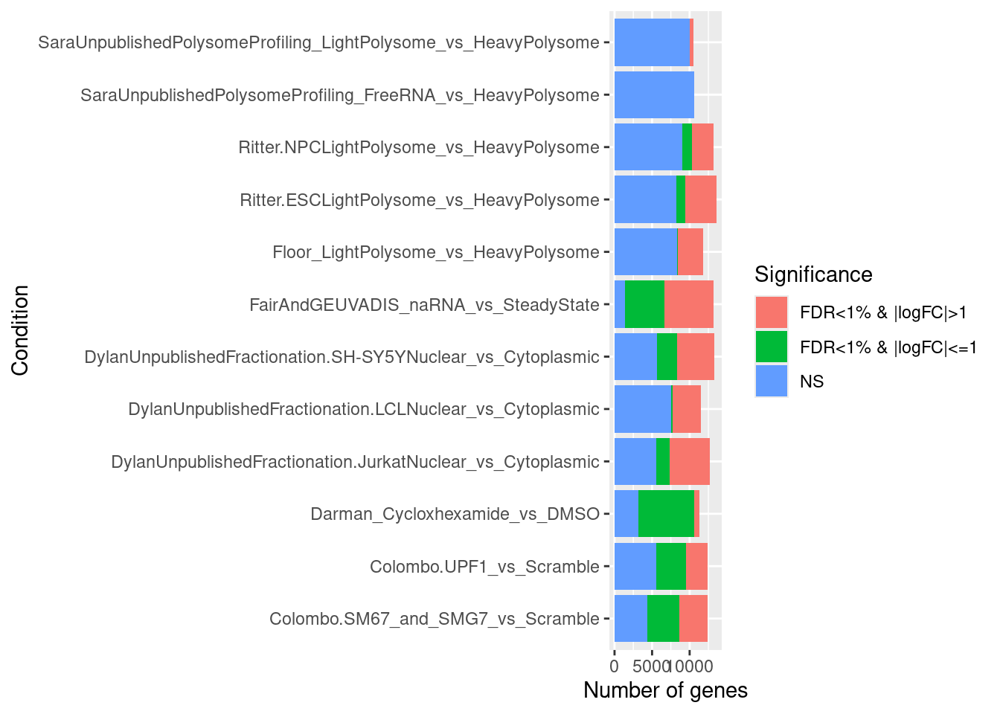
from this cyclohexamide vs dmso is probably the best contrast… Let’s look at differential splicing
diff.splicing.results %>%
filter(IsSig) %>%
distinct(Contrast, cluster, .keep_all=T) %>%
count(Contrast) %>%
arrange(Contrast) %>%
ggplot(aes(y=Contrast, x=n)) +
geom_col(position='stack') +
geom_text(aes(label=n), hjust=-0.1) +
scale_y_discrete(limits = rev) +
scale_x_continuous(expand = expansion(mult = c(0, 0.1))) +
theme_bw() +
labs(x="Number of leafcutter significant clusters", y="Contrast", caption=str_glue("FDR<1% & |dPSI|>{dPSI_threshold}%"))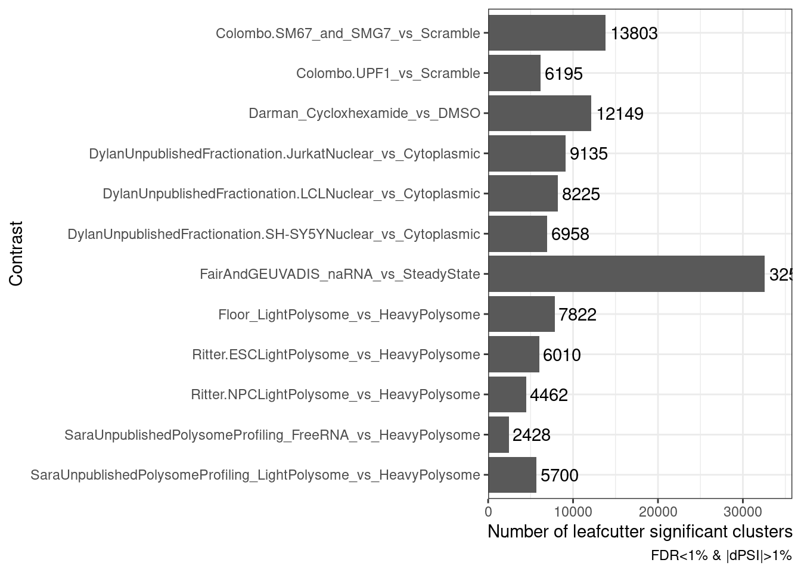
Let’s also look at effect sizes of the unproductive vs productive
diff.splicing.results %>%
filter(IsSig) %>%
group_by(Contrast, cluster, Coding) %>%
arrange(desc(abs(deltapsi))) %>%
ungroup() %>%
distinct(Contrast, cluster, Coding, .keep_all=T) %>%
filter(!is.na(Coding)) %>%
ggplot(aes(x=logef, color=Coding)) +
geom_vline(xintercept=0, color='gray') +
stat_ecdf() +
geom_vline( data = . %>%
group_by(Contrast, Coding) %>%
summarise(median=median(logef, na.rm=T)),
aes(xintercept=median, color=Coding), linetype="dashed") +
facet_wrap(~Contrast) +
coord_cartesian(xlim=c(-2, 2)) +
theme_bw()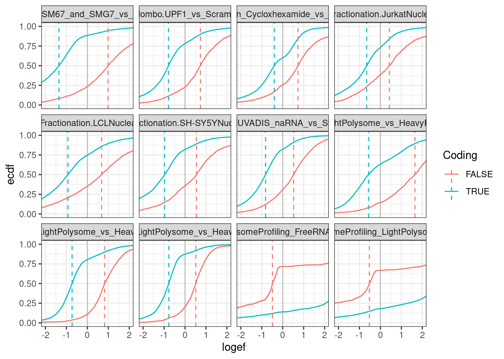
Ok, so from here, I don’t think mine/Sara’s polysome profilnig libraries are useful. All the other contrasts seem more reasonable in the sense that of the differential spliced unproductive junctions, they are generally up-regulated in the NMD enriched conditions, and the productive junctions are down-regulated, and mine as well filter out the Sara samples to avoid too many points/colors on plots.
diff.splicing.results <- diff.splicing.results %>%
filter(!str_detect(Contrast, "Sara"))
DE.results <- DE.results %>%
filter(!str_detect(condition, "Sara"))Check example of known NMD targets
Let’s look at a few junctions of intersest in known NMD targets…
First let’s look at SRSF6, which is a known NMD target.
diff.splicing.results %>%
filter(Gene_name=="SRSF6" & !Coding) Contrast
<char>
1: Colombo.SM67_and_SMG7_vs_Scramble
2: Colombo.SM67_and_SMG7_vs_Scramble
3: Colombo.UPF1_vs_Scramble
4: Colombo.UPF1_vs_Scramble
5: Colombo.UPF1_vs_Scramble
6: Darman_Cycloxhexamide_vs_DMSO
7: Darman_Cycloxhexamide_vs_DMSO
8: DylanUnpublishedFractionation.JurkatNuclear_vs_Cytoplasmic
9: DylanUnpublishedFractionation.JurkatNuclear_vs_Cytoplasmic
10: DylanUnpublishedFractionation.JurkatNuclear_vs_Cytoplasmic
11: DylanUnpublishedFractionation.LCLNuclear_vs_Cytoplasmic
12: DylanUnpublishedFractionation.LCLNuclear_vs_Cytoplasmic
13: DylanUnpublishedFractionation.LCLNuclear_vs_Cytoplasmic
14: DylanUnpublishedFractionation.SH-SY5YNuclear_vs_Cytoplasmic
15: DylanUnpublishedFractionation.SH-SY5YNuclear_vs_Cytoplasmic
16: FairAndGEUVADIS_naRNA_vs_SteadyState
17: FairAndGEUVADIS_naRNA_vs_SteadyState
18: FairAndGEUVADIS_naRNA_vs_SteadyState
19: Floor_LightPolysome_vs_HeavyPolysome
20: Floor_LightPolysome_vs_HeavyPolysome
21: Ritter.ESCLightPolysome_vs_HeavyPolysome
22: Ritter.ESCLightPolysome_vs_HeavyPolysome
23: Ritter.ESCLightPolysome_vs_HeavyPolysome
24: Ritter.NPCLightPolysome_vs_HeavyPolysome
25: Ritter.NPCLightPolysome_vs_HeavyPolysome
26: Ritter.NPCLightPolysome_vs_HeavyPolysome
Contrast
intron chrom start end
<char> <char> <int> <int>
1: chr20:43458509:43459153:clu_53323_+ chr20 43458509 43459153
2: chr20:43459420:43459771:clu_53323_+ chr20 43459420 43459771
3: chr20:43458509:43459153:clu_53323_+ chr20 43458509 43459153
4: chr20:43458729:43459153:clu_53323_+ chr20 43458729 43459153
5: chr20:43459420:43459771:clu_53323_+ chr20 43459420 43459771
6: chr20:43458509:43459153:clu_53323_+ chr20 43458509 43459153
7: chr20:43459420:43459771:clu_53323_+ chr20 43459420 43459771
8: chr20:43458509:43459153:clu_53323_+ chr20 43458509 43459153
9: chr20:43458729:43459153:clu_53323_+ chr20 43458729 43459153
10: chr20:43459420:43459771:clu_53323_+ chr20 43459420 43459771
11: chr20:43458509:43459153:clu_53323_+ chr20 43458509 43459153
12: chr20:43458729:43459153:clu_53323_+ chr20 43458729 43459153
13: chr20:43459420:43459771:clu_53323_+ chr20 43459420 43459771
14: chr20:43458509:43459153:clu_53323_+ chr20 43458509 43459153
15: chr20:43459420:43459771:clu_53323_+ chr20 43459420 43459771
16: chr20:43458509:43459153:clu_53323_+ chr20 43458509 43459153
17: chr20:43458729:43459153:clu_53323_+ chr20 43458729 43459153
18: chr20:43459420:43459771:clu_53323_+ chr20 43459420 43459771
19: chr20:43458509:43459153:clu_53323_+ chr20 43458509 43459153
20: chr20:43459420:43459771:clu_53323_+ chr20 43459420 43459771
21: chr20:43458509:43459153:clu_53323_+ chr20 43458509 43459153
22: chr20:43458729:43459153:clu_53323_+ chr20 43458729 43459153
23: chr20:43459420:43459771:clu_53323_+ chr20 43459420 43459771
24: chr20:43458509:43459153:clu_53323_+ chr20 43458509 43459153
25: chr20:43458729:43459153:clu_53323_+ chr20 43458729 43459153
26: chr20:43459420:43459771:clu_53323_+ chr20 43459420 43459771
intron chrom start end
cluster logef Control NMD_enriched deltapsi
<char> <num> <num> <num> <num>
1: chr20:clu_53323_+ 1.05206545 0.0161922606 0.2453837535 22.919149291
2: chr20:clu_53323_+ 0.24074416 0.0512307019 0.3449183243 29.368762243
3: chr20:clu_53323_+ 0.46177981 0.0156110615 0.0832650872 6.765402571
4: chr20:clu_53323_+ 3.37877016 0.0001048497 0.0103378590 1.023300927
5: chr20:clu_53323_+ -0.32040107 0.0513133390 0.1251883579 7.387501888
6: chr20:clu_53323_+ 0.46984437 0.0237465739 0.0707157751 4.696920120
7: chr20:clu_53323_+ 0.26200835 0.0972198706 0.2351843117 13.796444110
8: chr20:clu_53323_+ -0.09305403 0.0130306847 0.0368461784 2.381549363
9: chr20:clu_53323_+ -1.70055505 0.0004663993 0.0002642739 -0.020212540
10: chr20:clu_53323_+ 0.26586046 0.0269501093 0.1091089366 8.215882728
11: chr20:clu_53323_+ 0.02996170 0.0078785670 0.0304406957 2.256212871
12: chr20:clu_53323_+ -1.65009747 0.0026140760 0.0018822839 -0.073179209
13: chr20:clu_53323_+ 0.59685160 0.0400033187 0.2724586007 23.245528198
14: chr20:clu_53323_+ -1.73479925 0.0477505890 0.0251624315 -2.258815750
15: chr20:clu_53323_+ -0.78669334 0.2546476482 0.3463145270 9.166687876
16: chr20:clu_53323_+ 0.20281255 0.0256981574 0.0310789590 0.538080166
17: chr20:clu_53323_+ -0.11980759 0.0003037903 0.0002660885 -0.003770171
18: chr20:clu_53323_+ 0.28691998 0.1182533395 0.1555626337 3.730929412
19: chr20:clu_53323_+ 0.48096831 0.0460642384 0.0643428282 1.827858981
20: chr20:clu_53323_+ 1.84131034 0.0958023275 0.5215564848 42.575415727
21: chr20:clu_53323_+ -0.01417687 0.0414342418 0.0960540993 5.461985745
22: chr20:clu_53323_+ 2.33191681 0.0003859043 0.0093439760 0.895807165
23: chr20:clu_53323_+ 0.28636818 0.1156474218 0.3620908219 24.644340009
24: chr20:clu_53323_+ 0.16590115 0.0947353722 0.1218323645 2.709699225
25: chr20:clu_53323_+ 1.25729417 0.0032633497 0.0124997145 0.923636475
26: chr20:clu_53323_+ 0.51797121 0.2563004974 0.4687076483 21.240715094
cluster logef Control NMD_enriched deltapsi
status loglr df p p.adjust strand
<char> <num> <int> <num> <num> <char>
1: Success 57.715717 6 1.482475e-22 1.416475e-20 +
2: Success 57.715717 6 1.482475e-22 1.416475e-20 +
3: Success 33.255349 6 2.119251e-12 2.782228e-10 +
4: Success 33.255349 6 2.119251e-12 2.782228e-10 +
5: Success 33.255349 6 2.119251e-12 2.782228e-10 +
6: Success 30.815444 6 2.097478e-11 6.007507e-10 +
7: Success 30.815444 6 2.097478e-11 6.007507e-10 +
8: Success 42.693549 8 4.001478e-15 3.988212e-13 +
9: Success 42.693549 8 4.001478e-15 3.988212e-13 +
10: Success 42.693549 8 4.001478e-15 3.988212e-13 +
11: Success 20.172608 7 1.081055e-06 1.412099e-05 +
12: Success 20.172608 7 1.081055e-06 1.412099e-05 +
13: Success 20.172608 7 1.081055e-06 1.412099e-05 +
14: Success 8.475313 5 4.594393e-03 2.127349e-02 +
15: Success 8.475313 5 4.594393e-03 2.127349e-02 +
16: Success 26.926987 8 7.368617e-09 1.535400e-08 +
17: Success 26.926987 8 7.368617e-09 1.535400e-08 +
18: Success 26.926987 8 7.368617e-09 1.535400e-08 +
19: Success 16.263948 5 4.669469e-06 4.472329e-05 +
20: Success 16.263948 5 4.669469e-06 4.472329e-05 +
21: Success 65.386372 7 4.333776e-25 4.080603e-22 +
22: Success 65.386372 7 4.333776e-25 4.080603e-22 +
23: Success 65.386372 7 4.333776e-25 4.080603e-22 +
24: Success 15.432546 7 6.583855e-05 1.207907e-03 +
25: Success 15.432546 7 6.583855e-05 1.207907e-03 +
26: Success 15.432546 7 6.583855e-05 1.207907e-03 +
status loglr df p p.adjust strand
name score splice_site acceptors_skipped exons_skipped
<char> <int> <char> <int> <int>
1: chr20_43458509_43459152_+ 8759 GT-AG 0 0
2: chr20_43459420_43459770_+ 29930 GT-AG 0 0
3: chr20_43458509_43459152_+ 8759 GT-AG 0 0
4: chr20_43458729_43459152_+ 158 GT-AG 0 0
5: chr20_43459420_43459770_+ 29930 GT-AG 0 0
6: chr20_43458509_43459152_+ 8759 GT-AG 0 0
7: chr20_43459420_43459770_+ 29930 GT-AG 0 0
8: chr20_43458509_43459152_+ 8759 GT-AG 0 0
9: chr20_43458729_43459152_+ 158 GT-AG 0 0
10: chr20_43459420_43459770_+ 29930 GT-AG 0 0
11: chr20_43458509_43459152_+ 8759 GT-AG 0 0
12: chr20_43458729_43459152_+ 158 GT-AG 0 0
13: chr20_43459420_43459770_+ 29930 GT-AG 0 0
14: chr20_43458509_43459152_+ 8759 GT-AG 0 0
15: chr20_43459420_43459770_+ 29930 GT-AG 0 0
16: chr20_43458509_43459152_+ 8759 GT-AG 0 0
17: chr20_43458729_43459152_+ 158 GT-AG 0 0
18: chr20_43459420_43459770_+ 29930 GT-AG 0 0
19: chr20_43458509_43459152_+ 8759 GT-AG 0 0
20: chr20_43459420_43459770_+ 29930 GT-AG 0 0
21: chr20_43458509_43459152_+ 8759 GT-AG 0 0
22: chr20_43458729_43459152_+ 158 GT-AG 0 0
23: chr20_43459420_43459770_+ 29930 GT-AG 0 0
24: chr20_43458509_43459152_+ 8759 GT-AG 0 0
25: chr20_43458729_43459152_+ 158 GT-AG 0 0
26: chr20_43459420_43459770_+ 29930 GT-AG 0 0
name score splice_site acceptors_skipped exons_skipped
donors_skipped anchor known_donor known_acceptor known_junction
<int> <char> <int> <int> <int>
1: 0 D 1 0 0
2: 0 A 0 1 0
3: 0 D 1 0 0
4: 0 N 0 0 0
5: 0 A 0 1 0
6: 0 D 1 0 0
7: 0 A 0 1 0
8: 0 D 1 0 0
9: 0 N 0 0 0
10: 0 A 0 1 0
11: 0 D 1 0 0
12: 0 N 0 0 0
13: 0 A 0 1 0
14: 0 D 1 0 0
15: 0 A 0 1 0
16: 0 D 1 0 0
17: 0 N 0 0 0
18: 0 A 0 1 0
19: 0 D 1 0 0
20: 0 A 0 1 0
21: 0 D 1 0 0
22: 0 N 0 0 0
23: 0 A 0 1 0
24: 0 D 1 0 0
25: 0 N 0 0 0
26: 0 A 0 1 0
donors_skipped anchor known_donor known_acceptor known_junction
gene_names gene_ids
<char> <char>
1: ENSG00000288000,SRSF6 ENSG00000288000.1,ENSG00000124193.16
2: ENSG00000288000,SRSF6 ENSG00000288000.1,ENSG00000124193.16
3: ENSG00000288000,SRSF6 ENSG00000288000.1,ENSG00000124193.16
4:
5: ENSG00000288000,SRSF6 ENSG00000288000.1,ENSG00000124193.16
6: ENSG00000288000,SRSF6 ENSG00000288000.1,ENSG00000124193.16
7: ENSG00000288000,SRSF6 ENSG00000288000.1,ENSG00000124193.16
8: ENSG00000288000,SRSF6 ENSG00000288000.1,ENSG00000124193.16
9:
10: ENSG00000288000,SRSF6 ENSG00000288000.1,ENSG00000124193.16
11: ENSG00000288000,SRSF6 ENSG00000288000.1,ENSG00000124193.16
12:
13: ENSG00000288000,SRSF6 ENSG00000288000.1,ENSG00000124193.16
14: ENSG00000288000,SRSF6 ENSG00000288000.1,ENSG00000124193.16
15: ENSG00000288000,SRSF6 ENSG00000288000.1,ENSG00000124193.16
16: ENSG00000288000,SRSF6 ENSG00000288000.1,ENSG00000124193.16
17:
18: ENSG00000288000,SRSF6 ENSG00000288000.1,ENSG00000124193.16
19: ENSG00000288000,SRSF6 ENSG00000288000.1,ENSG00000124193.16
20: ENSG00000288000,SRSF6 ENSG00000288000.1,ENSG00000124193.16
21: ENSG00000288000,SRSF6 ENSG00000288000.1,ENSG00000124193.16
22:
23: ENSG00000288000,SRSF6 ENSG00000288000.1,ENSG00000124193.16
24: ENSG00000288000,SRSF6 ENSG00000288000.1,ENSG00000124193.16
25:
26: ENSG00000288000,SRSF6 ENSG00000288000.1,ENSG00000124193.16
gene_names gene_ids
transcripts
<char>
1: ENST00000244020.5,ENST00000657241.1,ENST00000662078.1,ENST00000668808.1,ENST00000670741.1
2: ENST00000244020.5,ENST00000657241.1,ENST00000662078.1,ENST00000668808.1,ENST00000670741.1
3: ENST00000244020.5,ENST00000657241.1,ENST00000662078.1,ENST00000668808.1,ENST00000670741.1
4:
5: ENST00000244020.5,ENST00000657241.1,ENST00000662078.1,ENST00000668808.1,ENST00000670741.1
6: ENST00000244020.5,ENST00000657241.1,ENST00000662078.1,ENST00000668808.1,ENST00000670741.1
7: ENST00000244020.5,ENST00000657241.1,ENST00000662078.1,ENST00000668808.1,ENST00000670741.1
8: ENST00000244020.5,ENST00000657241.1,ENST00000662078.1,ENST00000668808.1,ENST00000670741.1
9:
10: ENST00000244020.5,ENST00000657241.1,ENST00000662078.1,ENST00000668808.1,ENST00000670741.1
11: ENST00000244020.5,ENST00000657241.1,ENST00000662078.1,ENST00000668808.1,ENST00000670741.1
12:
13: ENST00000244020.5,ENST00000657241.1,ENST00000662078.1,ENST00000668808.1,ENST00000670741.1
14: ENST00000244020.5,ENST00000657241.1,ENST00000662078.1,ENST00000668808.1,ENST00000670741.1
15: ENST00000244020.5,ENST00000657241.1,ENST00000662078.1,ENST00000668808.1,ENST00000670741.1
16: ENST00000244020.5,ENST00000657241.1,ENST00000662078.1,ENST00000668808.1,ENST00000670741.1
17:
18: ENST00000244020.5,ENST00000657241.1,ENST00000662078.1,ENST00000668808.1,ENST00000670741.1
19: ENST00000244020.5,ENST00000657241.1,ENST00000662078.1,ENST00000668808.1,ENST00000670741.1
20: ENST00000244020.5,ENST00000657241.1,ENST00000662078.1,ENST00000668808.1,ENST00000670741.1
21: ENST00000244020.5,ENST00000657241.1,ENST00000662078.1,ENST00000668808.1,ENST00000670741.1
22:
23: ENST00000244020.5,ENST00000657241.1,ENST00000662078.1,ENST00000668808.1,ENST00000670741.1
24: ENST00000244020.5,ENST00000657241.1,ENST00000662078.1,ENST00000668808.1,ENST00000670741.1
25:
26: ENST00000244020.5,ENST00000657241.1,ENST00000662078.1,ENST00000668808.1,ENST00000670741.1
transcripts
5ss_seq 3ss_seq 5ss_score 3ss_score Intron_coord
<char> <char> <num> <num> <char>
1: CGCAGTGAGTC AATTTGAAAG 4.984518 0.6885456 chr20:43458509-43459153
2: TGATGTAAGTA TGTGATAAAG 8.411946 1.4627157 chr20:43459420-43459771
3: CGCAGTGAGTC AATTTGAAAG 4.984518 0.6885456 chr20:43458509-43459153
4: GGAGGTGGGTG AATTTGAAAG 8.606801 0.6885456 chr20:43458729-43459153
5: TGATGTAAGTA TGTGATAAAG 8.411946 1.4627157 chr20:43459420-43459771
6: CGCAGTGAGTC AATTTGAAAG 4.984518 0.6885456 chr20:43458509-43459153
7: TGATGTAAGTA TGTGATAAAG 8.411946 1.4627157 chr20:43459420-43459771
8: CGCAGTGAGTC AATTTGAAAG 4.984518 0.6885456 chr20:43458509-43459153
9: GGAGGTGGGTG AATTTGAAAG 8.606801 0.6885456 chr20:43458729-43459153
10: TGATGTAAGTA TGTGATAAAG 8.411946 1.4627157 chr20:43459420-43459771
11: CGCAGTGAGTC AATTTGAAAG 4.984518 0.6885456 chr20:43458509-43459153
12: GGAGGTGGGTG AATTTGAAAG 8.606801 0.6885456 chr20:43458729-43459153
13: TGATGTAAGTA TGTGATAAAG 8.411946 1.4627157 chr20:43459420-43459771
14: CGCAGTGAGTC AATTTGAAAG 4.984518 0.6885456 chr20:43458509-43459153
15: TGATGTAAGTA TGTGATAAAG 8.411946 1.4627157 chr20:43459420-43459771
16: CGCAGTGAGTC AATTTGAAAG 4.984518 0.6885456 chr20:43458509-43459153
17: GGAGGTGGGTG AATTTGAAAG 8.606801 0.6885456 chr20:43458729-43459153
18: TGATGTAAGTA TGTGATAAAG 8.411946 1.4627157 chr20:43459420-43459771
19: CGCAGTGAGTC AATTTGAAAG 4.984518 0.6885456 chr20:43458509-43459153
20: TGATGTAAGTA TGTGATAAAG 8.411946 1.4627157 chr20:43459420-43459771
21: CGCAGTGAGTC AATTTGAAAG 4.984518 0.6885456 chr20:43458509-43459153
22: GGAGGTGGGTG AATTTGAAAG 8.606801 0.6885456 chr20:43458729-43459153
23: TGATGTAAGTA TGTGATAAAG 8.411946 1.4627157 chr20:43459420-43459771
24: CGCAGTGAGTC AATTTGAAAG 4.984518 0.6885456 chr20:43458509-43459153
25: GGAGGTGGGTG AATTTGAAAG 8.606801 0.6885456 chr20:43458729-43459153
26: TGATGTAAGTA TGTGATAAAG 8.411946 1.4627157 chr20:43459420-43459771
5ss_seq 3ss_seq 5ss_score 3ss_score Intron_coord
Gene_name Annot Coding UTR IsSig
<char> <lgcl> <lgcl> <lgcl> <lgcl>
1: SRSF6 TRUE FALSE FALSE TRUE
2: SRSF6 TRUE FALSE FALSE TRUE
3: SRSF6 TRUE FALSE FALSE TRUE
4: SRSF6 TRUE FALSE FALSE TRUE
5: SRSF6 TRUE FALSE FALSE TRUE
6: SRSF6 TRUE FALSE FALSE TRUE
7: SRSF6 TRUE FALSE FALSE TRUE
8: SRSF6 TRUE FALSE FALSE TRUE
9: SRSF6 TRUE FALSE FALSE FALSE
10: SRSF6 TRUE FALSE FALSE TRUE
11: SRSF6 TRUE FALSE FALSE TRUE
12: SRSF6 TRUE FALSE FALSE FALSE
13: SRSF6 TRUE FALSE FALSE TRUE
14: SRSF6 TRUE FALSE FALSE FALSE
15: SRSF6 TRUE FALSE FALSE FALSE
16: SRSF6 TRUE FALSE FALSE FALSE
17: SRSF6 TRUE FALSE FALSE FALSE
18: SRSF6 TRUE FALSE FALSE TRUE
19: SRSF6 TRUE FALSE FALSE TRUE
20: SRSF6 TRUE FALSE FALSE TRUE
21: SRSF6 TRUE FALSE FALSE TRUE
22: SRSF6 TRUE FALSE FALSE FALSE
23: SRSF6 TRUE FALSE FALSE TRUE
24: SRSF6 TRUE FALSE FALSE TRUE
25: SRSF6 TRUE FALSE FALSE FALSE
26: SRSF6 TRUE FALSE FALSE TRUE
Gene_name Annot Coding UTR IsSigdiff.splicing.results %>%
filter(Gene_name=="SRSF6" & !Coding) %>%
ggplot(aes(color=Contrast, x=deltapsi, y=-log10(p.adjust))) +
geom_point() +
geom_hline(yintercept=-log10(0.01), linetype="dashed") +
geom_vline(xintercept = 0, linetype="dashed") +
theme_bw() +
facet_wrap(~intron) 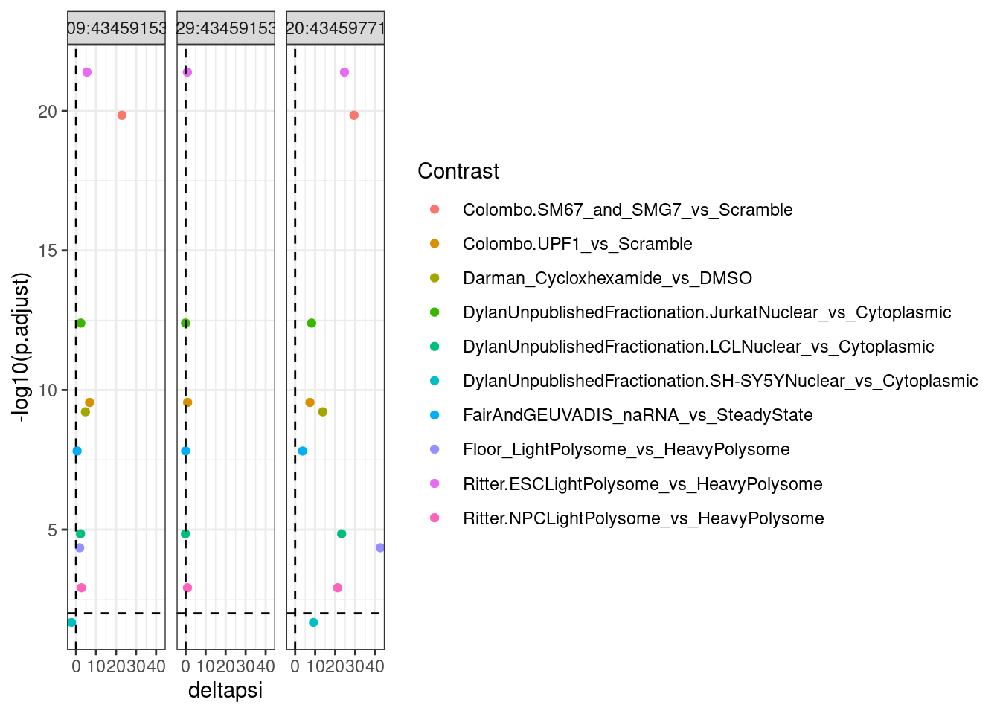
diff.splicing.results %>%
filter(Gene_name=="SRSF6" & !Coding) %>%
filter(intron == "chr20:43459420:43459771:clu_53323_+") Contrast
<char>
1: Colombo.SM67_and_SMG7_vs_Scramble
2: Colombo.UPF1_vs_Scramble
3: Darman_Cycloxhexamide_vs_DMSO
4: DylanUnpublishedFractionation.JurkatNuclear_vs_Cytoplasmic
5: DylanUnpublishedFractionation.LCLNuclear_vs_Cytoplasmic
6: DylanUnpublishedFractionation.SH-SY5YNuclear_vs_Cytoplasmic
7: FairAndGEUVADIS_naRNA_vs_SteadyState
8: Floor_LightPolysome_vs_HeavyPolysome
9: Ritter.ESCLightPolysome_vs_HeavyPolysome
10: Ritter.NPCLightPolysome_vs_HeavyPolysome
intron chrom start end
<char> <char> <int> <int>
1: chr20:43459420:43459771:clu_53323_+ chr20 43459420 43459771
2: chr20:43459420:43459771:clu_53323_+ chr20 43459420 43459771
3: chr20:43459420:43459771:clu_53323_+ chr20 43459420 43459771
4: chr20:43459420:43459771:clu_53323_+ chr20 43459420 43459771
5: chr20:43459420:43459771:clu_53323_+ chr20 43459420 43459771
6: chr20:43459420:43459771:clu_53323_+ chr20 43459420 43459771
7: chr20:43459420:43459771:clu_53323_+ chr20 43459420 43459771
8: chr20:43459420:43459771:clu_53323_+ chr20 43459420 43459771
9: chr20:43459420:43459771:clu_53323_+ chr20 43459420 43459771
10: chr20:43459420:43459771:clu_53323_+ chr20 43459420 43459771
cluster logef Control NMD_enriched deltapsi status
<char> <num> <num> <num> <num> <char>
1: chr20:clu_53323_+ 0.2407442 0.05123070 0.3449183 29.368762 Success
2: chr20:clu_53323_+ -0.3204011 0.05131334 0.1251884 7.387502 Success
3: chr20:clu_53323_+ 0.2620083 0.09721987 0.2351843 13.796444 Success
4: chr20:clu_53323_+ 0.2658605 0.02695011 0.1091089 8.215883 Success
5: chr20:clu_53323_+ 0.5968516 0.04000332 0.2724586 23.245528 Success
6: chr20:clu_53323_+ -0.7866933 0.25464765 0.3463145 9.166688 Success
7: chr20:clu_53323_+ 0.2869200 0.11825334 0.1555626 3.730929 Success
8: chr20:clu_53323_+ 1.8413103 0.09580233 0.5215565 42.575416 Success
9: chr20:clu_53323_+ 0.2863682 0.11564742 0.3620908 24.644340 Success
10: chr20:clu_53323_+ 0.5179712 0.25630050 0.4687076 21.240715 Success
loglr df p p.adjust strand name
<num> <int> <num> <num> <char> <char>
1: 57.715717 6 1.482475e-22 1.416475e-20 + chr20_43459420_43459770_+
2: 33.255349 6 2.119251e-12 2.782228e-10 + chr20_43459420_43459770_+
3: 30.815444 6 2.097478e-11 6.007507e-10 + chr20_43459420_43459770_+
4: 42.693549 8 4.001478e-15 3.988212e-13 + chr20_43459420_43459770_+
5: 20.172608 7 1.081055e-06 1.412099e-05 + chr20_43459420_43459770_+
6: 8.475313 5 4.594393e-03 2.127349e-02 + chr20_43459420_43459770_+
7: 26.926987 8 7.368617e-09 1.535400e-08 + chr20_43459420_43459770_+
8: 16.263948 5 4.669469e-06 4.472329e-05 + chr20_43459420_43459770_+
9: 65.386372 7 4.333776e-25 4.080603e-22 + chr20_43459420_43459770_+
10: 15.432546 7 6.583855e-05 1.207907e-03 + chr20_43459420_43459770_+
score splice_site acceptors_skipped exons_skipped donors_skipped anchor
<int> <char> <int> <int> <int> <char>
1: 29930 GT-AG 0 0 0 A
2: 29930 GT-AG 0 0 0 A
3: 29930 GT-AG 0 0 0 A
4: 29930 GT-AG 0 0 0 A
5: 29930 GT-AG 0 0 0 A
6: 29930 GT-AG 0 0 0 A
7: 29930 GT-AG 0 0 0 A
8: 29930 GT-AG 0 0 0 A
9: 29930 GT-AG 0 0 0 A
10: 29930 GT-AG 0 0 0 A
known_donor known_acceptor known_junction gene_names
<int> <int> <int> <char>
1: 0 1 0 ENSG00000288000,SRSF6
2: 0 1 0 ENSG00000288000,SRSF6
3: 0 1 0 ENSG00000288000,SRSF6
4: 0 1 0 ENSG00000288000,SRSF6
5: 0 1 0 ENSG00000288000,SRSF6
6: 0 1 0 ENSG00000288000,SRSF6
7: 0 1 0 ENSG00000288000,SRSF6
8: 0 1 0 ENSG00000288000,SRSF6
9: 0 1 0 ENSG00000288000,SRSF6
10: 0 1 0 ENSG00000288000,SRSF6
gene_ids
<char>
1: ENSG00000288000.1,ENSG00000124193.16
2: ENSG00000288000.1,ENSG00000124193.16
3: ENSG00000288000.1,ENSG00000124193.16
4: ENSG00000288000.1,ENSG00000124193.16
5: ENSG00000288000.1,ENSG00000124193.16
6: ENSG00000288000.1,ENSG00000124193.16
7: ENSG00000288000.1,ENSG00000124193.16
8: ENSG00000288000.1,ENSG00000124193.16
9: ENSG00000288000.1,ENSG00000124193.16
10: ENSG00000288000.1,ENSG00000124193.16
transcripts
<char>
1: ENST00000244020.5,ENST00000657241.1,ENST00000662078.1,ENST00000668808.1,ENST00000670741.1
2: ENST00000244020.5,ENST00000657241.1,ENST00000662078.1,ENST00000668808.1,ENST00000670741.1
3: ENST00000244020.5,ENST00000657241.1,ENST00000662078.1,ENST00000668808.1,ENST00000670741.1
4: ENST00000244020.5,ENST00000657241.1,ENST00000662078.1,ENST00000668808.1,ENST00000670741.1
5: ENST00000244020.5,ENST00000657241.1,ENST00000662078.1,ENST00000668808.1,ENST00000670741.1
6: ENST00000244020.5,ENST00000657241.1,ENST00000662078.1,ENST00000668808.1,ENST00000670741.1
7: ENST00000244020.5,ENST00000657241.1,ENST00000662078.1,ENST00000668808.1,ENST00000670741.1
8: ENST00000244020.5,ENST00000657241.1,ENST00000662078.1,ENST00000668808.1,ENST00000670741.1
9: ENST00000244020.5,ENST00000657241.1,ENST00000662078.1,ENST00000668808.1,ENST00000670741.1
10: ENST00000244020.5,ENST00000657241.1,ENST00000662078.1,ENST00000668808.1,ENST00000670741.1
5ss_seq 3ss_seq 5ss_score 3ss_score Intron_coord
<char> <char> <num> <num> <char>
1: TGATGTAAGTA TGTGATAAAG 8.411946 1.462716 chr20:43459420-43459771
2: TGATGTAAGTA TGTGATAAAG 8.411946 1.462716 chr20:43459420-43459771
3: TGATGTAAGTA TGTGATAAAG 8.411946 1.462716 chr20:43459420-43459771
4: TGATGTAAGTA TGTGATAAAG 8.411946 1.462716 chr20:43459420-43459771
5: TGATGTAAGTA TGTGATAAAG 8.411946 1.462716 chr20:43459420-43459771
6: TGATGTAAGTA TGTGATAAAG 8.411946 1.462716 chr20:43459420-43459771
7: TGATGTAAGTA TGTGATAAAG 8.411946 1.462716 chr20:43459420-43459771
8: TGATGTAAGTA TGTGATAAAG 8.411946 1.462716 chr20:43459420-43459771
9: TGATGTAAGTA TGTGATAAAG 8.411946 1.462716 chr20:43459420-43459771
10: TGATGTAAGTA TGTGATAAAG 8.411946 1.462716 chr20:43459420-43459771
Gene_name Annot Coding UTR IsSig
<char> <lgcl> <lgcl> <lgcl> <lgcl>
1: SRSF6 TRUE FALSE FALSE TRUE
2: SRSF6 TRUE FALSE FALSE TRUE
3: SRSF6 TRUE FALSE FALSE TRUE
4: SRSF6 TRUE FALSE FALSE TRUE
5: SRSF6 TRUE FALSE FALSE TRUE
6: SRSF6 TRUE FALSE FALSE FALSE
7: SRSF6 TRUE FALSE FALSE TRUE
8: SRSF6 TRUE FALSE FALSE TRUE
9: SRSF6 TRUE FALSE FALSE TRUE
10: SRSF6 TRUE FALSE FALSE TRUEDE.results %>%
filter(Symbol == "SRSF6") %>%
ggplot(aes(color=condition, x=logFC, y=-log10(FDR))) +
geom_point() +
geom_hline(yintercept=-log10(0.01), linetype="dashed") +
theme_bw()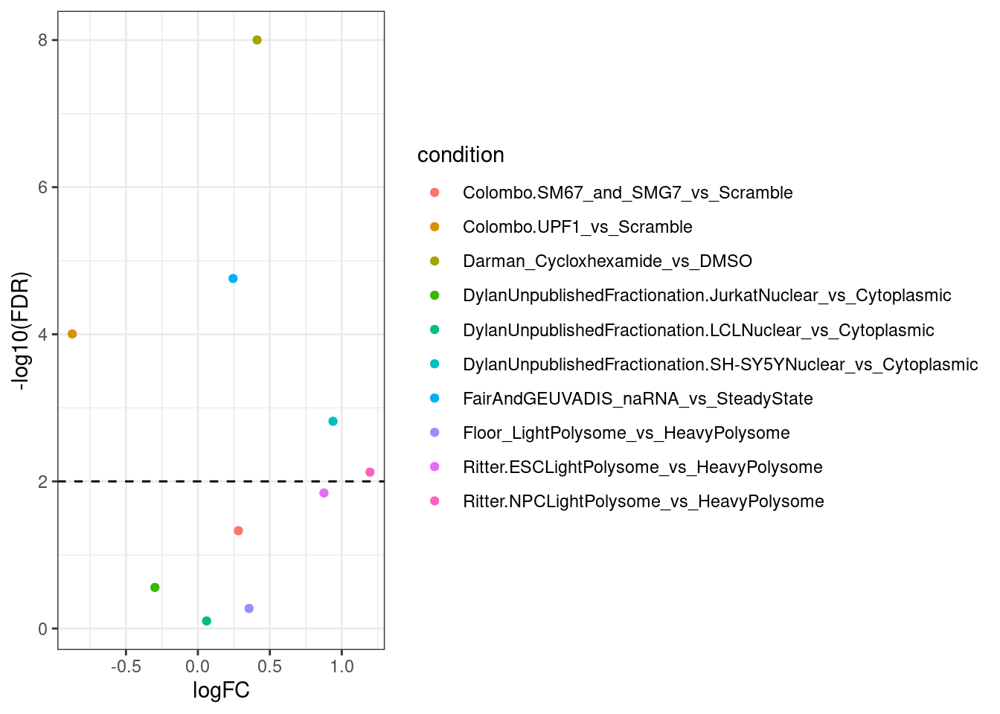
Ok, that checks out… the chr20:43459420:43459771:clu_53323_+ is significantly upregulated in most all contrasts, except weirdly not UPF1
Let’s try some of the other SR proteins and splicing genes that are known conserved NMD targets…
DE.results %>%
filter(Symbol %in% c("U2AF2", "RBFOX2", "SRSF4", "SRSF3", "SRSF6", "HNRNPL")) %>%
ggplot(aes(color=condition, x=logFC, y=-log10(FDR))) +
geom_point() +
geom_hline(yintercept=-log10(0.01), linetype="dashed") +
geom_vline(xintercept = 0, linetype="dashed") +
theme_bw() +
facet_wrap(~Symbol)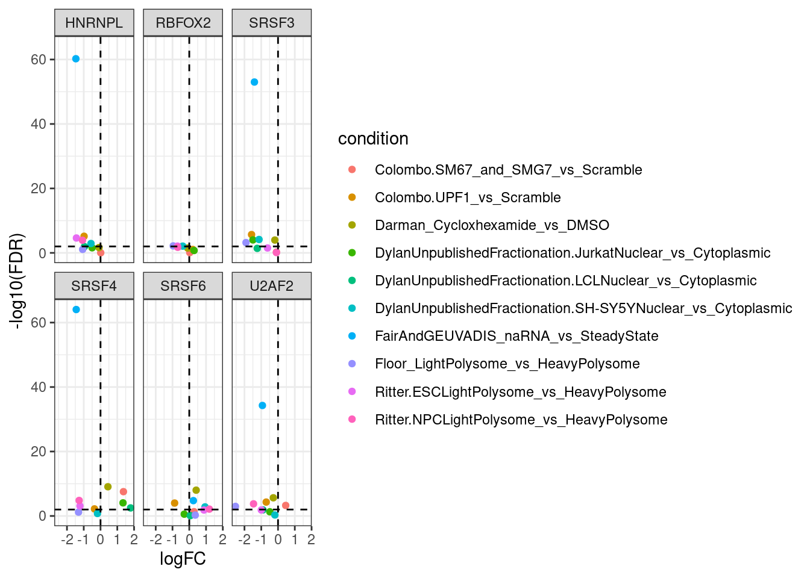
Ok not so sure what to make of those DE results… Will check splicing results for those genes…
And some other conserved ones mentioned in the literature… like PSD95 (DLG4, ENSG00000132535)
…
DE.results %>%
filter(str_detect(GeneID, "ENSG00000132535")) %>%
ggplot(aes(color=condition, x=logFC, y=-log10(FDR))) +
geom_point() +
geom_hline(yintercept=-log10(0.01), linetype="dashed") +
theme_bw()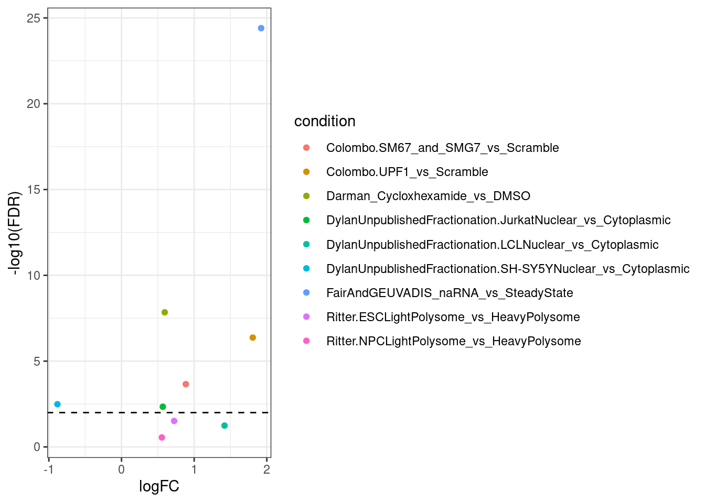
and bak1, though i’m not sure if the NMD event studied by sika zheng lab is conserved in humans
DE.results %>%
filter(Symbol == "BAK1") %>%
ggplot(aes(color=condition, x=logFC, y=-log10(FDR))) +
geom_point() +
geom_hline(yintercept=-log10(0.01), linetype="dashed") +
theme_bw()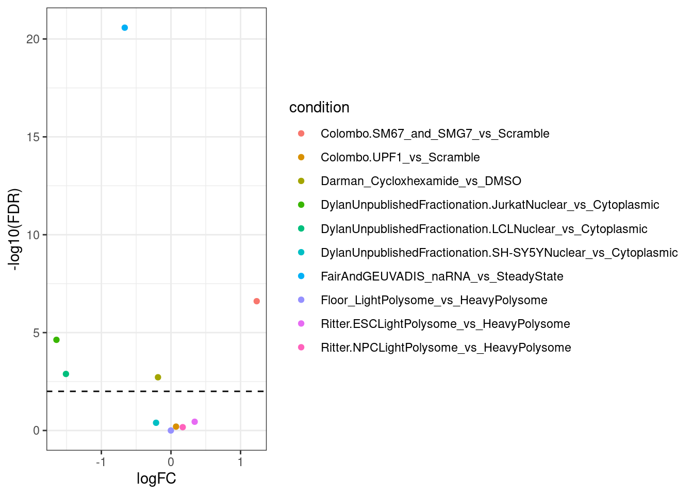
Now let’s check ARHGAP17, an exon-skipping NMD event I highlighted in the leafcutter2 manuscript.
diff.splicing.results %>%
filter(Gene_name=="ARHGAP17" & !Coding) Contrast
<char>
1: Colombo.SM67_and_SMG7_vs_Scramble
2: Darman_Cycloxhexamide_vs_DMSO
3: DylanUnpublishedFractionation.LCLNuclear_vs_Cytoplasmic
4: DylanUnpublishedFractionation.SH-SY5YNuclear_vs_Cytoplasmic
5: FairAndGEUVADIS_naRNA_vs_SteadyState
6: FairAndGEUVADIS_naRNA_vs_SteadyState
7: FairAndGEUVADIS_naRNA_vs_SteadyState
8: Ritter.ESCLightPolysome_vs_HeavyPolysome
9: Ritter.NPCLightPolysome_vs_HeavyPolysome
intron chrom start end
<char> <char> <int> <int>
1: chr16:24970580:24972596:clu_29745_- chr16 24970580 24972596
2: chr16:24954730:24959911:clu_29742_- chr16 24954730 24959911
3: chr16:24954730:24959911:clu_29742_- chr16 24954730 24959911
4: chr16:24954730:24959911:clu_29742_- chr16 24954730 24959911
5: chr16:24954730:24959911:clu_29742_- chr16 24954730 24959911
6: chr16:24970580:24972596:clu_29745_- chr16 24970580 24972596
7: chr16:24972633:24977215:clu_29745_- chr16 24972633 24977215
8: chr16:24954730:24959911:clu_29742_- chr16 24954730 24959911
9: chr16:24954730:24959911:clu_29742_- chr16 24954730 24959911
cluster logef Control NMD_enriched deltapsi status
<char> <num> <num> <num> <num> <char>
1: chr16:clu_29745_- 0.3890447 3.491028e-03 0.007569930 0.40789025 Success
2: chr16:clu_29742_- -0.2263197 3.221865e-03 0.001649848 -0.15720170 Success
3: chr16:clu_29742_- -0.3556787 1.034933e-02 0.010134086 -0.02152450 Success
4: chr16:clu_29742_- -0.3565413 7.697497e-03 0.009329653 0.16321564 Success
5: chr16:clu_29742_- -0.6572197 3.375194e-03 0.002789473 -0.05857213 Success
6: chr16:clu_29745_- 0.4382338 4.213245e-04 0.021174854 2.07535296 Success
7: chr16:clu_29745_- 5.1917601 2.710970e-06 0.015803695 1.58009840 Success
8: chr16:clu_29742_- 1.1779676 5.410032e-04 0.003158253 0.26172493 Success
9: chr16:clu_29742_- 0.6285185 5.489159e-03 0.018104784 1.26156249 Success
loglr df p p.adjust strand name
<num> <int> <num> <num> <char> <char>
1: 0.1941978 1 5.331439e-01 6.203317e-01 - chr16_24970580_24972595_-
2: 11.0422506 4 1.928054e-04 8.268606e-04 - chr16_24954730_24959910_-
3: 3.8453415 6 2.616517e-01 3.555646e-01 - chr16_24954730_24959910_-
4: 3.3291597 5 2.473166e-01 3.782919e-01 - chr16_24954730_24959910_-
5: 23.3859874 6 2.077663e-08 4.224925e-08 - chr16_24954730_24959910_-
6: 27.1918345 3 9.293664e-12 2.247543e-11 - chr16_24970580_24972595_-
7: 27.1918345 3 9.293664e-12 2.247543e-11 - chr16_24972633_24977214_-
8: 0.7080483 2 4.926047e-01 6.415110e-01 - chr16_24954730_24959910_-
9: 3.3533820 5 2.433779e-01 4.505200e-01 - chr16_24954730_24959910_-
score splice_site acceptors_skipped exons_skipped donors_skipped anchor
<int> <char> <int> <int> <int> <char>
1: 199 GT-AG 0 0 0 A
2: 363 GT-AG 1 1 1 NDA
3: 363 GT-AG 1 1 1 NDA
4: 363 GT-AG 1 1 1 NDA
5: 363 GT-AG 1 1 1 NDA
6: 199 GT-AG 0 0 0 A
7: 106 GT-AG 0 0 0 D
8: 363 GT-AG 1 1 1 NDA
9: 363 GT-AG 1 1 1 NDA
known_donor known_acceptor known_junction gene_names gene_ids
<int> <int> <int> <char> <char>
1: 0 1 0 ARHGAP17 ENSG00000140750.17
2: 1 1 0 ARHGAP17 ENSG00000140750.17
3: 1 1 0 ARHGAP17 ENSG00000140750.17
4: 1 1 0 ARHGAP17 ENSG00000140750.17
5: 1 1 0 ARHGAP17 ENSG00000140750.17
6: 0 1 0 ARHGAP17 ENSG00000140750.17
7: 1 0 0 ARHGAP17 ENSG00000140750.17
8: 1 1 0 ARHGAP17 ENSG00000140750.17
9: 1 1 0 ARHGAP17 ENSG00000140750.17
transcripts 5ss_seq 3ss_seq 5ss_score
<char> <char> <char> <num>
1: ENST00000289968.11,ENST00000303665.9 AAAGGTAGGAA TATCTTCCAG 9.315023
2: ENST00000289968.11,ENST00000303665.9 TACGGTAAGCA GCTGCTCTAG 8.374299
3: ENST00000289968.11,ENST00000303665.9 TACGGTAAGCA GCTGCTCTAG 8.374299
4: ENST00000289968.11,ENST00000303665.9 TACGGTAAGCA GCTGCTCTAG 8.374299
5: ENST00000289968.11,ENST00000303665.9 TACGGTAAGCA GCTGCTCTAG 8.374299
6: ENST00000289968.11,ENST00000303665.9 AAAGGTAGGAA TATCTTCCAG 9.315023
7: ENST00000289968.11,ENST00000303665.9 ACACGTGAGTA TCTTTAATAG 7.507509
8: ENST00000289968.11,ENST00000303665.9 TACGGTAAGCA GCTGCTCTAG 8.374299
9: ENST00000289968.11,ENST00000303665.9 TACGGTAAGCA GCTGCTCTAG 8.374299
3ss_score Intron_coord Gene_name Annot Coding UTR IsSig
<num> <char> <char> <lgcl> <lgcl> <lgcl> <lgcl>
1: 8.726866 chr16:24970580-24972596 ARHGAP17 TRUE FALSE TRUE FALSE
2: 4.224128 chr16:24954730-24959911 ARHGAP17 TRUE FALSE FALSE FALSE
3: 4.224128 chr16:24954730-24959911 ARHGAP17 TRUE FALSE FALSE FALSE
4: 4.224128 chr16:24954730-24959911 ARHGAP17 TRUE FALSE FALSE FALSE
5: 4.224128 chr16:24954730-24959911 ARHGAP17 TRUE FALSE FALSE FALSE
6: 8.726866 chr16:24970580-24972596 ARHGAP17 TRUE FALSE TRUE TRUE
7: 6.968430 chr16:24972633-24977215 ARHGAP17 TRUE FALSE FALSE TRUE
8: 4.224128 chr16:24954730-24959911 ARHGAP17 TRUE FALSE FALSE FALSE
9: 4.224128 chr16:24954730-24959911 ARHGAP17 TRUE FALSE FALSE FALSEdiff.splicing.results %>%
filter(Gene_name=="ARHGAP17" & !Coding) %>%
ggplot(aes(color=Contrast, x=deltapsi, y=-log10(p.adjust))) +
geom_point() +
geom_hline(yintercept=-log10(0.01), linetype="dashed") +
geom_vline(xintercept = 0, linetype="dashed") +
theme_bw() +
facet_wrap(~intron) 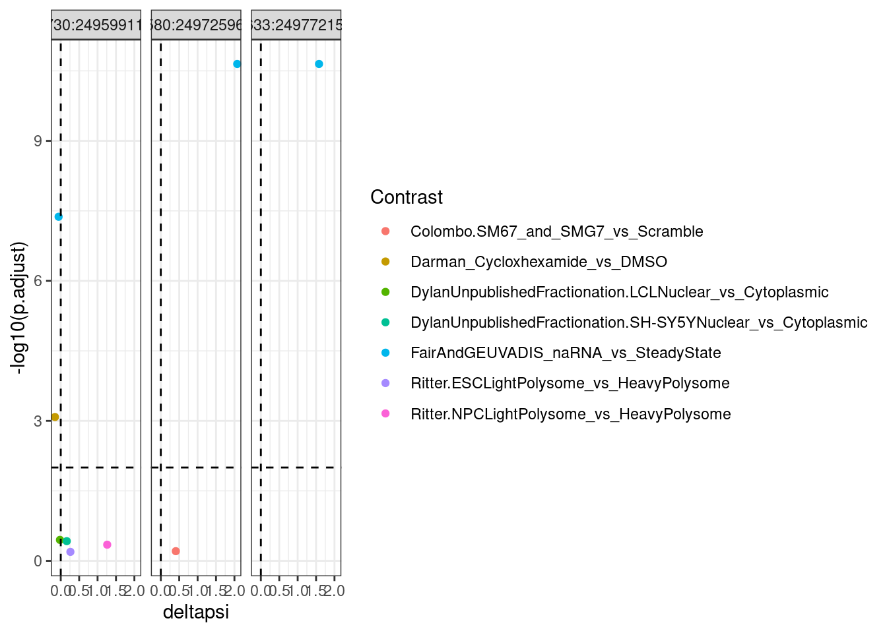
diff.splicing.results %>%
filter(Gene_name=="ARHGAP17" & !Coding) %>%
filter(intron == "chr16:24954730:24959911:clu_29742_-") Contrast
<char>
1: Darman_Cycloxhexamide_vs_DMSO
2: DylanUnpublishedFractionation.LCLNuclear_vs_Cytoplasmic
3: DylanUnpublishedFractionation.SH-SY5YNuclear_vs_Cytoplasmic
4: FairAndGEUVADIS_naRNA_vs_SteadyState
5: Ritter.ESCLightPolysome_vs_HeavyPolysome
6: Ritter.NPCLightPolysome_vs_HeavyPolysome
intron chrom start end
<char> <char> <int> <int>
1: chr16:24954730:24959911:clu_29742_- chr16 24954730 24959911
2: chr16:24954730:24959911:clu_29742_- chr16 24954730 24959911
3: chr16:24954730:24959911:clu_29742_- chr16 24954730 24959911
4: chr16:24954730:24959911:clu_29742_- chr16 24954730 24959911
5: chr16:24954730:24959911:clu_29742_- chr16 24954730 24959911
6: chr16:24954730:24959911:clu_29742_- chr16 24954730 24959911
cluster logef Control NMD_enriched deltapsi status
<char> <num> <num> <num> <num> <char>
1: chr16:clu_29742_- -0.2263197 0.0032218653 0.001649848 -0.15720170 Success
2: chr16:clu_29742_- -0.3556787 0.0103493312 0.010134086 -0.02152450 Success
3: chr16:clu_29742_- -0.3565413 0.0076974966 0.009329653 0.16321564 Success
4: chr16:clu_29742_- -0.6572197 0.0033751942 0.002789473 -0.05857213 Success
5: chr16:clu_29742_- 1.1779676 0.0005410032 0.003158253 0.26172493 Success
6: chr16:clu_29742_- 0.6285185 0.0054891587 0.018104784 1.26156249 Success
loglr df p p.adjust strand name
<num> <int> <num> <num> <char> <char>
1: 11.0422506 4 1.928054e-04 8.268606e-04 - chr16_24954730_24959910_-
2: 3.8453415 6 2.616517e-01 3.555646e-01 - chr16_24954730_24959910_-
3: 3.3291597 5 2.473166e-01 3.782919e-01 - chr16_24954730_24959910_-
4: 23.3859874 6 2.077663e-08 4.224925e-08 - chr16_24954730_24959910_-
5: 0.7080483 2 4.926047e-01 6.415110e-01 - chr16_24954730_24959910_-
6: 3.3533820 5 2.433779e-01 4.505200e-01 - chr16_24954730_24959910_-
score splice_site acceptors_skipped exons_skipped donors_skipped anchor
<int> <char> <int> <int> <int> <char>
1: 363 GT-AG 1 1 1 NDA
2: 363 GT-AG 1 1 1 NDA
3: 363 GT-AG 1 1 1 NDA
4: 363 GT-AG 1 1 1 NDA
5: 363 GT-AG 1 1 1 NDA
6: 363 GT-AG 1 1 1 NDA
known_donor known_acceptor known_junction gene_names gene_ids
<int> <int> <int> <char> <char>
1: 1 1 0 ARHGAP17 ENSG00000140750.17
2: 1 1 0 ARHGAP17 ENSG00000140750.17
3: 1 1 0 ARHGAP17 ENSG00000140750.17
4: 1 1 0 ARHGAP17 ENSG00000140750.17
5: 1 1 0 ARHGAP17 ENSG00000140750.17
6: 1 1 0 ARHGAP17 ENSG00000140750.17
transcripts 5ss_seq 3ss_seq 5ss_score
<char> <char> <char> <num>
1: ENST00000289968.11,ENST00000303665.9 TACGGTAAGCA GCTGCTCTAG 8.374299
2: ENST00000289968.11,ENST00000303665.9 TACGGTAAGCA GCTGCTCTAG 8.374299
3: ENST00000289968.11,ENST00000303665.9 TACGGTAAGCA GCTGCTCTAG 8.374299
4: ENST00000289968.11,ENST00000303665.9 TACGGTAAGCA GCTGCTCTAG 8.374299
5: ENST00000289968.11,ENST00000303665.9 TACGGTAAGCA GCTGCTCTAG 8.374299
6: ENST00000289968.11,ENST00000303665.9 TACGGTAAGCA GCTGCTCTAG 8.374299
3ss_score Intron_coord Gene_name Annot Coding UTR IsSig
<num> <char> <char> <lgcl> <lgcl> <lgcl> <lgcl>
1: 4.224128 chr16:24954730-24959911 ARHGAP17 TRUE FALSE FALSE FALSE
2: 4.224128 chr16:24954730-24959911 ARHGAP17 TRUE FALSE FALSE FALSE
3: 4.224128 chr16:24954730-24959911 ARHGAP17 TRUE FALSE FALSE FALSE
4: 4.224128 chr16:24954730-24959911 ARHGAP17 TRUE FALSE FALSE FALSE
5: 4.224128 chr16:24954730-24959911 ARHGAP17 TRUE FALSE FALSE FALSE
6: 4.224128 chr16:24954730-24959911 ARHGAP17 TRUE FALSE FALSE FALSEDE.results %>%
filter(Symbol == "ARHGAP17") %>%
ggplot(aes(color=condition, x=logFC, y=-log10(FDR))) +
geom_point() +
geom_hline(yintercept=-log10(0.01), linetype="dashed") +
theme_bw()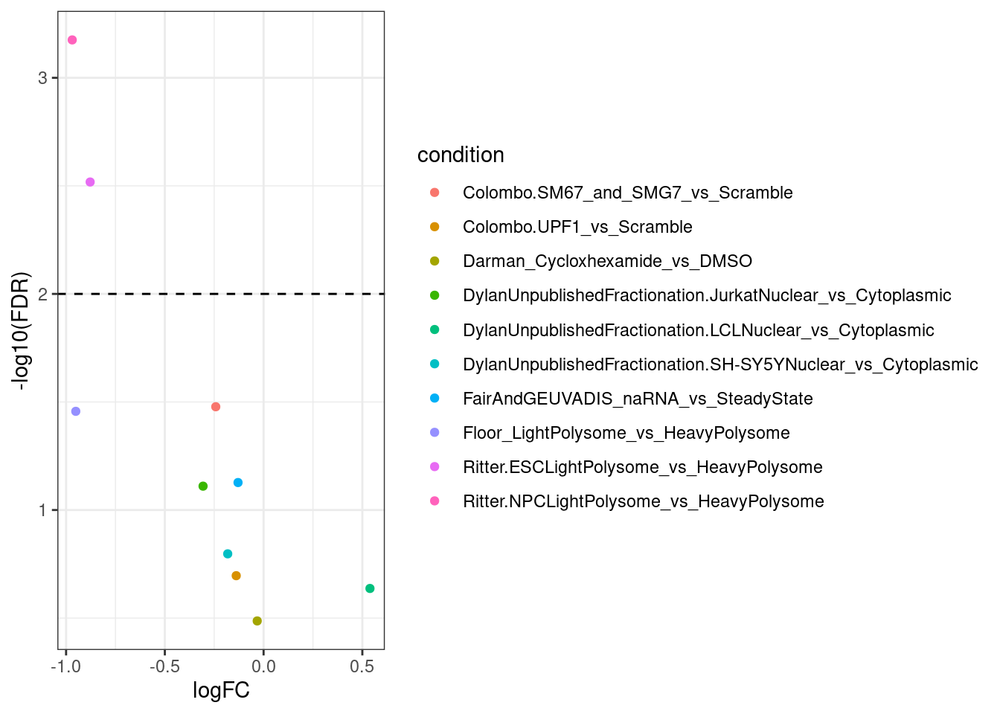
Ok this one is interesting… I had to manually look up the coordinates of the exon skipping junction I mentioned in leafcutter2 manuscript, as chr16:24954730:24959911:clu_29742_-, but not sensible effect size direction in the cyclohexamide vs dmso contrast or naRNA vs steady state… Not sure what to make of this one… And the effect size of the host gene expression is not significant or negative (which could still be consistent with NMD junctions, if they are very rarely used).
diff.splicing.results %>%
filter(Gene_name=="SCN8A" & !Coding) Contrast intron
<char> <char>
1: Ritter.NPCLightPolysome_vs_HeavyPolysome chr12:51766027:51768113:clu_17447_+
2: Ritter.NPCLightPolysome_vs_HeavyPolysome chr12:51768172:51768865:clu_17447_+
3: Ritter.NPCLightPolysome_vs_HeavyPolysome chr12:51774362:51780202:clu_17449_+
4: Ritter.NPCLightPolysome_vs_HeavyPolysome chr12:51780271:51786542:clu_17449_+
chrom start end cluster logef Control
<char> <int> <int> <char> <num> <num>
1: chr12 51766027 51768113 chr12:clu_17447_+ 7.09371777 3.112383e-07
2: chr12 51768172 51768865 chr12:clu_17447_+ -3.54685889 1.312997e-02
3: chr12 51774362 51780202 chr12:clu_17449_+ 0.09507781 3.433445e-01
4: chr12 51780271 51786542 chr12:clu_17449_+ 0.08507083 3.259497e-01
NMD_enriched deltapsi status loglr df p p.adjust strand
<num> <num> <char> <num> <int> <num> <num> <char>
1: 0.01284174 1.28414245 Success 1.2942240 2 0.2741105 0.4853404 +
2: 0.01296136 -0.01686075 Success 1.2942240 2 0.2741105 0.4853404 +
3: 0.37434529 3.10007600 Success 0.2670796 2 0.7656122 0.8846779 +
4: 0.35184130 2.58916237 Success 0.2670796 2 0.7656122 0.8846779 +
name score splice_site acceptors_skipped exons_skipped
<char> <int> <char> <int> <int>
1: chr12_51766027_51768112_+ 35 GT-AG 0 0
2: chr12_51768172_51768864_+ 49 GT-AG 0 0
3: chr12_51774362_51780201_+ 661 GT-AG 0 0
4: chr12_51780271_51786541_+ 591 GT-AG 1 1
donors_skipped anchor known_donor known_acceptor known_junction gene_names
<int> <char> <int> <int> <int> <char>
1: 0 D 1 0 0 SCN8A
2: 0 A 0 1 0 SCN8A
3: 0 D 1 0 0 SCN8A
4: 1 A 0 1 0 SCN8A
gene_ids
<char>
1: ENSG00000196876.19
2: ENSG00000196876.19
3: ENSG00000196876.19
4: ENSG00000196876.19
transcripts
<char>
1: ENST00000354534.11,ENST00000355133.7,ENST00000545061.5,ENST00000599343.5,ENST00000627620.5,ENST00000662684.1,ENST00000668547.1
2: ENST00000354534.11,ENST00000355133.7,ENST00000545061.5,ENST00000599343.5,ENST00000627620.5,ENST00000662684.1,ENST00000668547.1
3: ENST00000354534.11,ENST00000355133.7,ENST00000545061.5,ENST00000599343.5,ENST00000627620.5,ENST00000662684.1,ENST00000668547.1
4: ENST00000354534.11,ENST00000355133.7,ENST00000545061.5,ENST00000599343.5,ENST00000627620.5,ENST00000662684.1,ENST00000668547.1
5ss_seq 3ss_seq 5ss_score 3ss_score Intron_coord Gene_name
<char> <char> <num> <num> <char> <char>
1: GGTGGTTAGTA TCTTCCCAAG 5.793933 5.8097940 chr12:51766027-51768113 SCN8A
2: AAAAGTAAGTC ACTGGCATAG 9.380309 0.8051234 chr12:51768172-51768865 SCN8A
3: GGCTGTAGGTG TTTTCCATAG 3.451919 8.5187230 chr12:51774362-51780202 SCN8A
4: GAGGGTAAGGC TCCAATGCAG 8.192756 5.3371230 chr12:51780271-51786542 SCN8A
Annot Coding UTR IsSig
<lgcl> <lgcl> <lgcl> <lgcl>
1: TRUE FALSE FALSE FALSE
2: TRUE FALSE FALSE FALSE
3: TRUE FALSE FALSE FALSE
4: TRUE FALSE FALSE FALSEdiff.splicing.results %>%
filter(Gene_name=="SCN8A" & !Coding) %>%
ggplot(aes(color=Contrast, x=deltapsi, y=-log10(p.adjust))) +
geom_point() +
geom_hline(yintercept=-log10(0.01), linetype="dashed") +
geom_vline(xintercept = 0, linetype="dashed") +
theme_bw() +
facet_wrap(~intron) 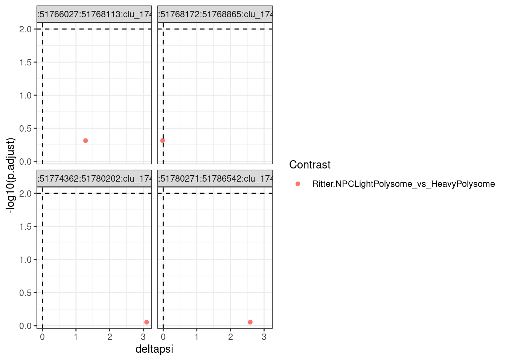
DE.results %>%
filter(Symbol == "SCN8A") %>%
ggplot(aes(color=condition, x=logFC, y=-log10(FDR))) +
geom_point() +
geom_hline(yintercept=-log10(0.01), linetype="dashed") +
theme_bw()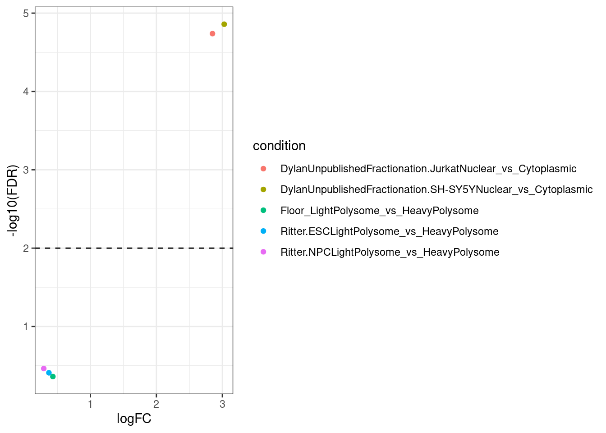
no splicing tests in SCN8A… I think it is just not expressed in any of these samples. But there are tests in differential expression that suggest up-regulation in nuclear RNA… I could recover that significant splice junction in my re-analysis of Mazin data in leafcutter2 manuscript. I could consider adding all that data to the analysis.
Let’s try SYNGAP1
diff.splicing.results %>%
filter(Gene_name=="SYNGAP1" & !Coding) %>%
ggplot(aes(color=Contrast, x=deltapsi, y=-log10(p.adjust))) +
geom_point() +
geom_hline(yintercept=-log10(0.01), linetype="dashed") +
geom_vline(xintercept = 0, linetype="dashed") +
theme_bw() +
facet_wrap(~intron) 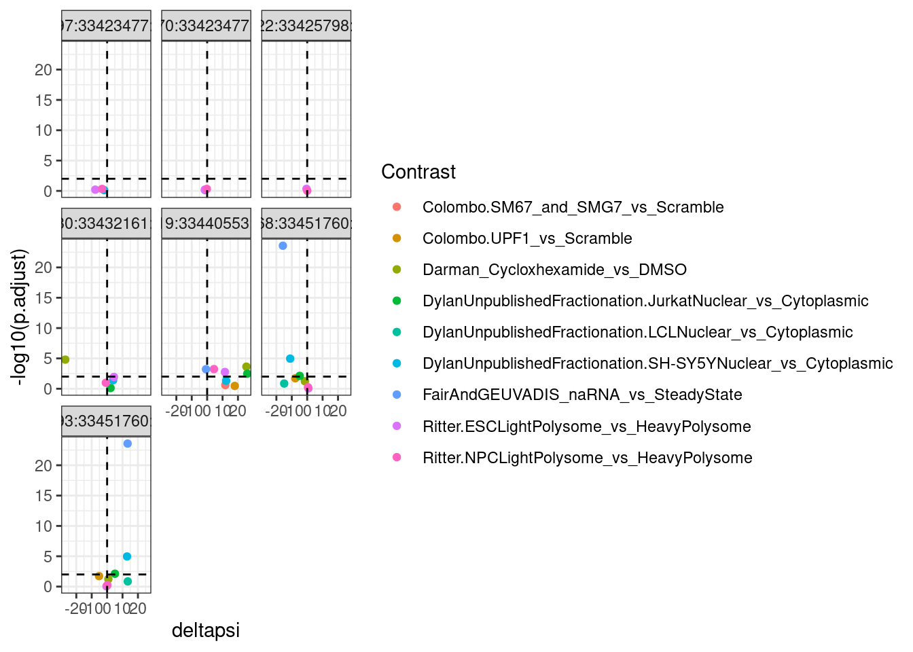
diff.splicing.results %>%
filter(Gene_name=="SYNGAP1" & !Coding) %>%
filter(intron == "chr6:33438919:33440553:clu_72389_+") Contrast
<char>
1: Colombo.SM67_and_SMG7_vs_Scramble
2: Colombo.UPF1_vs_Scramble
3: Darman_Cycloxhexamide_vs_DMSO
4: DylanUnpublishedFractionation.JurkatNuclear_vs_Cytoplasmic
5: DylanUnpublishedFractionation.SH-SY5YNuclear_vs_Cytoplasmic
6: FairAndGEUVADIS_naRNA_vs_SteadyState
7: Ritter.ESCLightPolysome_vs_HeavyPolysome
8: Ritter.NPCLightPolysome_vs_HeavyPolysome
intron chrom start end cluster
<char> <char> <int> <int> <char>
1: chr6:33438919:33440553:clu_72389_+ chr6 33438919 33440553 chr6:clu_72389_+
2: chr6:33438919:33440553:clu_72389_+ chr6 33438919 33440553 chr6:clu_72389_+
3: chr6:33438919:33440553:clu_72389_+ chr6 33438919 33440553 chr6:clu_72389_+
4: chr6:33438919:33440553:clu_72389_+ chr6 33438919 33440553 chr6:clu_72389_+
5: chr6:33438919:33440553:clu_72389_+ chr6 33438919 33440553 chr6:clu_72389_+
6: chr6:33438919:33440553:clu_72389_+ chr6 33438919 33440553 chr6:clu_72389_+
7: chr6:33438919:33440553:clu_72389_+ chr6 33438919 33440553 chr6:clu_72389_+
8: chr6:33438919:33440553:clu_72389_+ chr6 33438919 33440553 chr6:clu_72389_+
logef Control NMD_enriched deltapsi status loglr df
<num> <num> <num> <num> <char> <num> <int>
1: 2.0153414 0.4737337 0.5916376 11.7903890 Success 3.870732 5
2: 0.5196368 0.4735339 0.6528797 17.9345721 Success 3.494346 5
3: 0.4956944 0.3810956 0.6357550 25.4659365 Success 11.448234 3
4: -1.3885964 0.2750760 0.5352371 26.0161104 Success 10.749786 5
5: 0.5317421 0.2743841 0.3976508 12.3266707 Success 7.145558 5
6: -0.4181101 0.3594852 0.3520050 -0.7480132 Success 12.324268 6
7: 1.7773455 0.3329563 0.4483756 11.5419251 Success 13.287976 6
8: 0.2779642 0.3198095 0.3640423 4.4232717 Success 15.447554 6
p p.adjust strand name score splice_site
<num> <num> <char> <char> <int> <char>
1: 1.710715e-01 0.2441195859 + chr6_33438919_33440552_+ 7891 GT-AG
2: 2.214827e-01 0.3435305018 + chr6_33438919_33440552_+ 7891 GT-AG
3: 4.244012e-05 0.0002271387 + chr6_33438919_33440552_+ 7891 GT-AG
4: 6.516057e-04 0.0033553019 + chr6_33438919_33440552_+ 7891 GT-AG
5: 1.386221e-02 0.0485223318 + chr6_33438919_33440552_+ 7891 GT-AG
6: 3.965835e-04 0.0006061113 + chr6_33438919_33440552_+ 7891 GT-AG
7: 1.738356e-04 0.0017165937 + chr6_33438919_33440552_+ 7891 GT-AG
8: 2.654530e-05 0.0005755812 + chr6_33438919_33440552_+ 7891 GT-AG
acceptors_skipped exons_skipped donors_skipped anchor known_donor
<int> <int> <int> <char> <int>
1: 0 0 0 D 1
2: 0 0 0 D 1
3: 0 0 0 D 1
4: 0 0 0 D 1
5: 0 0 0 D 1
6: 0 0 0 D 1
7: 0 0 0 D 1
8: 0 0 0 D 1
known_acceptor known_junction gene_names gene_ids
<int> <int> <char> <char>
1: 0 0 SYNGAP1 ENSG00000197283.18
2: 0 0 SYNGAP1 ENSG00000197283.18
3: 0 0 SYNGAP1 ENSG00000197283.18
4: 0 0 SYNGAP1 ENSG00000197283.18
5: 0 0 SYNGAP1 ENSG00000197283.18
6: 0 0 SYNGAP1 ENSG00000197283.18
7: 0 0 SYNGAP1 ENSG00000197283.18
8: 0 0 SYNGAP1 ENSG00000197283.18
transcripts
<char>
1: ENST00000418600.7,ENST00000428982.4,ENST00000449372.7,ENST00000628646.2,ENST00000629380.3,ENST00000644458.1,ENST00000645250.1,ENST00000646630.1,ENST00000682587.1
2: ENST00000418600.7,ENST00000428982.4,ENST00000449372.7,ENST00000628646.2,ENST00000629380.3,ENST00000644458.1,ENST00000645250.1,ENST00000646630.1,ENST00000682587.1
3: ENST00000418600.7,ENST00000428982.4,ENST00000449372.7,ENST00000628646.2,ENST00000629380.3,ENST00000644458.1,ENST00000645250.1,ENST00000646630.1,ENST00000682587.1
4: ENST00000418600.7,ENST00000428982.4,ENST00000449372.7,ENST00000628646.2,ENST00000629380.3,ENST00000644458.1,ENST00000645250.1,ENST00000646630.1,ENST00000682587.1
5: ENST00000418600.7,ENST00000428982.4,ENST00000449372.7,ENST00000628646.2,ENST00000629380.3,ENST00000644458.1,ENST00000645250.1,ENST00000646630.1,ENST00000682587.1
6: ENST00000418600.7,ENST00000428982.4,ENST00000449372.7,ENST00000628646.2,ENST00000629380.3,ENST00000644458.1,ENST00000645250.1,ENST00000646630.1,ENST00000682587.1
7: ENST00000418600.7,ENST00000428982.4,ENST00000449372.7,ENST00000628646.2,ENST00000629380.3,ENST00000644458.1,ENST00000645250.1,ENST00000646630.1,ENST00000682587.1
8: ENST00000418600.7,ENST00000428982.4,ENST00000449372.7,ENST00000628646.2,ENST00000629380.3,ENST00000644458.1,ENST00000645250.1,ENST00000646630.1,ENST00000682587.1
5ss_seq 3ss_seq 5ss_score 3ss_score Intron_coord Gene_name
<char> <char> <num> <num> <char> <char>
1: ACTGGTGAGAC CTTCAAGCAG 8.165933 4.80902 chr6:33438919-33440553 SYNGAP1
2: ACTGGTGAGAC CTTCAAGCAG 8.165933 4.80902 chr6:33438919-33440553 SYNGAP1
3: ACTGGTGAGAC CTTCAAGCAG 8.165933 4.80902 chr6:33438919-33440553 SYNGAP1
4: ACTGGTGAGAC CTTCAAGCAG 8.165933 4.80902 chr6:33438919-33440553 SYNGAP1
5: ACTGGTGAGAC CTTCAAGCAG 8.165933 4.80902 chr6:33438919-33440553 SYNGAP1
6: ACTGGTGAGAC CTTCAAGCAG 8.165933 4.80902 chr6:33438919-33440553 SYNGAP1
7: ACTGGTGAGAC CTTCAAGCAG 8.165933 4.80902 chr6:33438919-33440553 SYNGAP1
8: ACTGGTGAGAC CTTCAAGCAG 8.165933 4.80902 chr6:33438919-33440553 SYNGAP1
Annot Coding UTR IsSig
<lgcl> <lgcl> <lgcl> <lgcl>
1: TRUE FALSE FALSE FALSE
2: TRUE FALSE FALSE FALSE
3: TRUE FALSE FALSE TRUE
4: TRUE FALSE FALSE TRUE
5: TRUE FALSE FALSE FALSE
6: TRUE FALSE FALSE FALSE
7: TRUE FALSE FALSE TRUE
8: TRUE FALSE FALSE TRUEDE.results %>%
filter(Symbol == "SYNGAP1") %>%
ggplot(aes(color=condition, x=logFC, y=-log10(FDR))) +
geom_point() +
geom_hline(yintercept=-log10(0.01), linetype="dashed") +
geom_vline(xintercept = 0, linetype="dashed") +
theme_bw()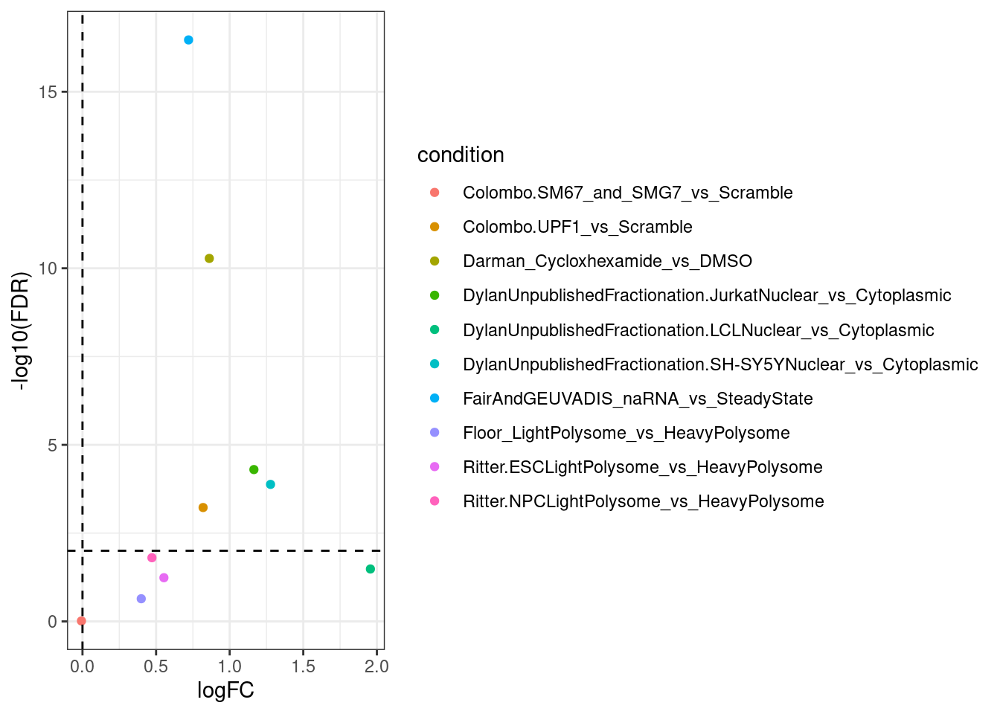
Ok, generally a positive deltaPSI… again some disagreement between naRNA vs steady state and the other contrasts… that’s not necessarily unsurprising considering how unspliced naRNA is.
Let’s check some others that the TANGO paper mentions… SCN1A?
diff.splicing.results %>%
filter(Gene_name=="SCN1A" & !Coding)Empty data.table (0 rows and 39 cols): Contrast,intron,chrom,start,end,cluster...DE.results %>%
filter(Symbol == "SCN1A") %>%
ggplot(aes(color=condition, x=logFC, y=-log10(FDR))) +
geom_point() +
geom_hline(yintercept=-log10(0.01), linetype="dashed") +
geom_vline(xintercept = 0, linetype="dashed") +
theme_bw()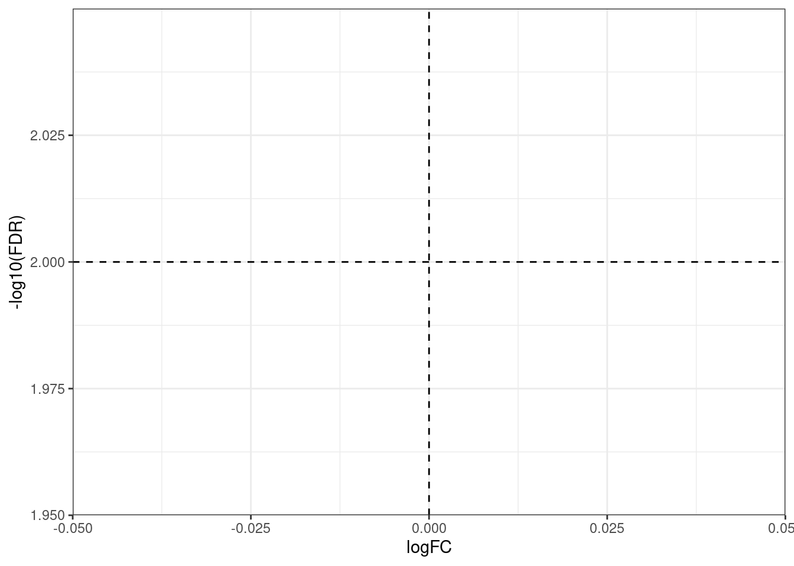
Ok no tests for SCN1A… it just isn’t tested/expressed in these analyses.
diff.splicing.results %>%
filter(Gene_name=="CD274" & !Coding) Contrast
<char>
1: DylanUnpublishedFractionation.LCLNuclear_vs_Cytoplasmic
2: FairAndGEUVADIS_naRNA_vs_SteadyState
intron chrom start end cluster
<char> <char> <int> <int> <char>
1: chr9:5465539:5466770:clu_83002_+ chr9 5465539 5466770 chr9:clu_83002_+
2: chr9:5465539:5466770:clu_83002_+ chr9 5465539 5466770 chr9:clu_83002_+
logef Control NMD_enriched deltapsi status loglr df
<num> <num> <num> <num> <char> <num> <int>
1: 6.38117467 6.275008e-07 0.008464249 0.8463622 Success 1.170946 2
2: 0.09641209 1.564953e-02 0.011924056 -0.3725470 Success 28.362063 4
p p.adjust strand name score splice_site
<num> <num> <char> <char> <int> <char>
1: 3.100734e-01 4.054199e-01 + chr9_5465539_5466769_+ 220 GT-AG
2: 1.413511e-11 3.389371e-11 + chr9_5465539_5466769_+ 220 GT-AG
acceptors_skipped exons_skipped donors_skipped anchor known_donor
<int> <int> <int> <char> <int>
1: 0 0 1 A 0
2: 0 0 1 A 0
known_acceptor known_junction gene_names gene_ids
<int> <int> <char> <char>
1: 1 0 CD274 ENSG00000120217.14
2: 1 0 CD274 ENSG00000120217.14
transcripts 5ss_seq 3ss_seq 5ss_score
<char> <char> <char> <num>
1: ENST00000381573.8,ENST00000381577.4 CTTGGTAATTC TTTTCTCAAG 5.560873
2: ENST00000381573.8,ENST00000381577.4 CTTGGTAATTC TTTTCTCAAG 5.560873
3ss_score Intron_coord Gene_name Annot Coding UTR IsSig
<num> <char> <char> <lgcl> <lgcl> <lgcl> <lgcl>
1: 7.583448 chr9:5465539-5466770 CD274 TRUE FALSE FALSE FALSE
2: 7.583448 chr9:5465539-5466770 CD274 TRUE FALSE FALSE FALSEdiff.splicing.results %>%
filter(Gene_name=="CD274" & !Coding) %>%
ggplot(aes(color=Contrast, x=deltapsi, y=-log10(p.adjust))) +
geom_point() +
geom_hline(yintercept=-log10(0.01), linetype="dashed") +
geom_vline(xintercept = 0, linetype="dashed") +
theme_bw() +
facet_wrap(~intron) 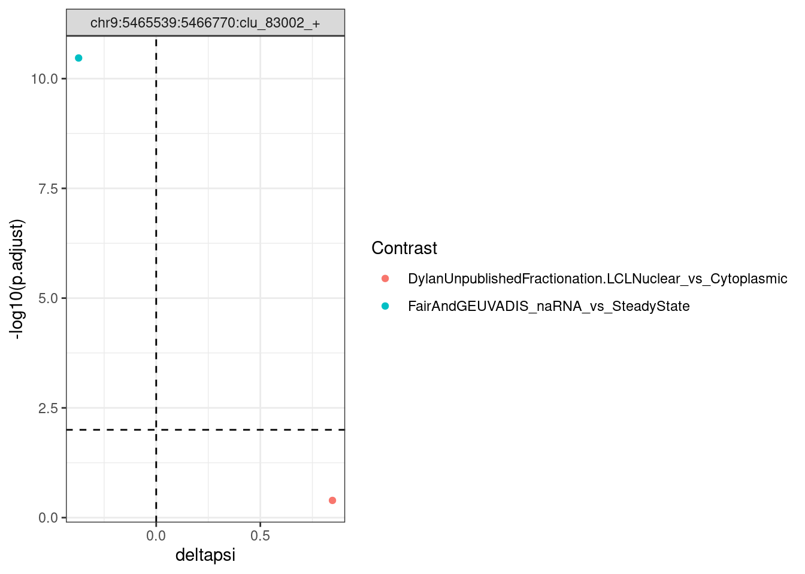
DE.results %>%
filter(Symbol == "CD274") %>%
ggplot(aes(color=condition, x=logFC, y=-log10(FDR))) +
geom_point() +
geom_hline(yintercept=-log10(0.01), linetype="dashed") +
geom_vline(xintercept = 0, linetype="dashed") +
theme_bw()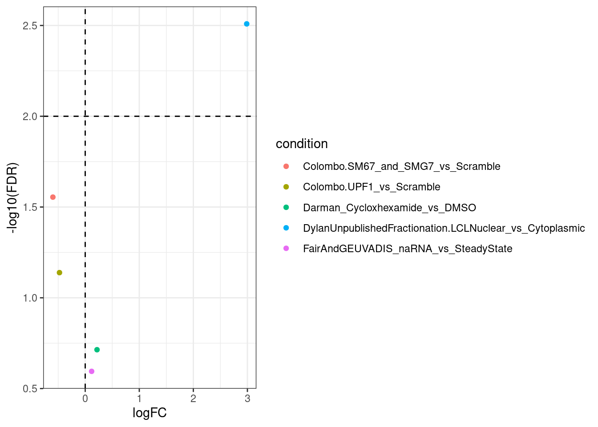
And PCCA…
diff.splicing.results %>%
filter(Gene_name=="PCCA" & !Coding) %>%
ggplot(aes(color=Contrast, x=deltapsi*100, y=-log10(p.adjust))) +
geom_point() +
geom_hline(yintercept=-log10(0.01), linetype="dashed") +
geom_vline(xintercept = 0, linetype="dashed") +
theme_bw() +
facet_wrap(~intron, scales="free") 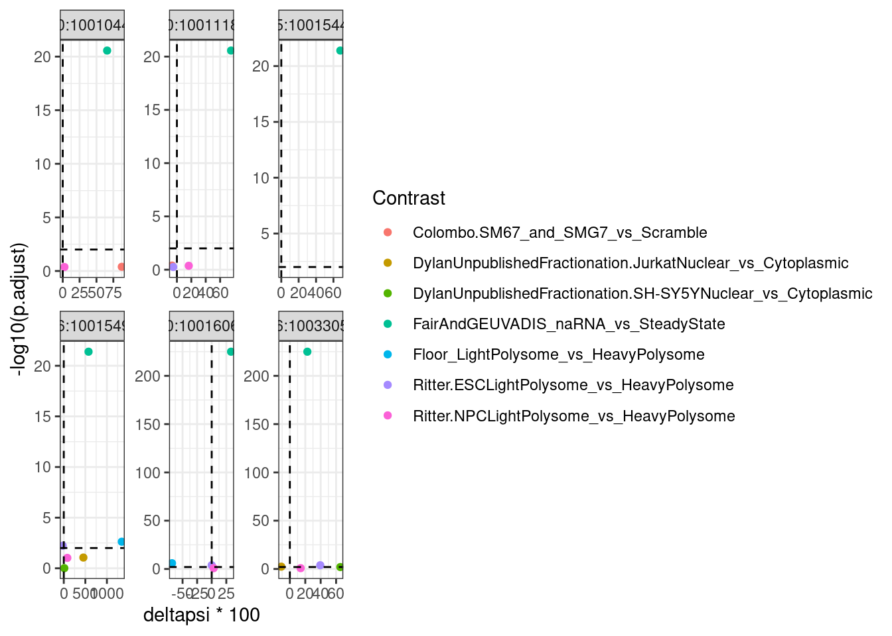
diff.splicing.results %>%
filter(Gene_name=="PCCA" & !Coding) %>%
filter(!Contrast == "FairAndGEUVADIS_naRNA_vs_SteadyState") %>%
ggplot(aes(color=Contrast, x=deltapsi, y=-log10(p.adjust))) +
geom_point() +
geom_hline(yintercept=-log10(0.01), linetype="dashed") +
geom_vline(xintercept = 0, linetype="dashed") +
theme_bw() +
facet_wrap(~intron) 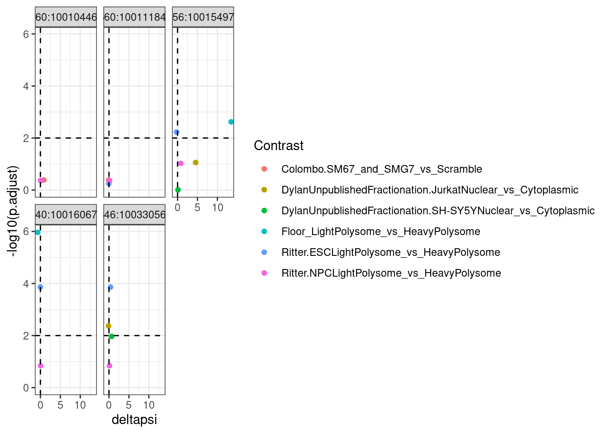
diff.splicing.results %>%
filter(Gene_name=="PCCA" & !Coding) %>%
filter(!Contrast == "FairAndGEUVADIS_naRNA_vs_SteadyState") %>%
ggplot(aes(color=Contrast, x=deltapsi, y=-log10(p))) +
geom_point() +
geom_hline(yintercept=-log10(0.01), linetype="dashed") +
geom_vline(xintercept = 0, linetype="dashed") +
theme_bw() +
facet_wrap(~intron) 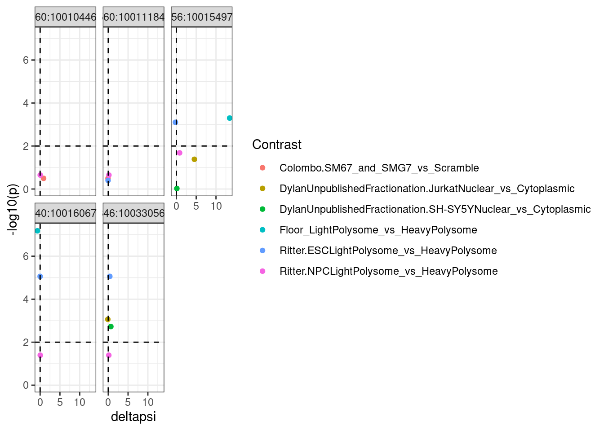
DE.results %>%
filter(Symbol == "PCCA") %>%
ggplot(aes(color=condition, x=logFC, y=-log10(FDR))) +
geom_point() +
geom_hline(yintercept=-log10(0.01), linetype="dashed") +
geom_vline(xintercept = 0, linetype="dashed") +
theme_bw()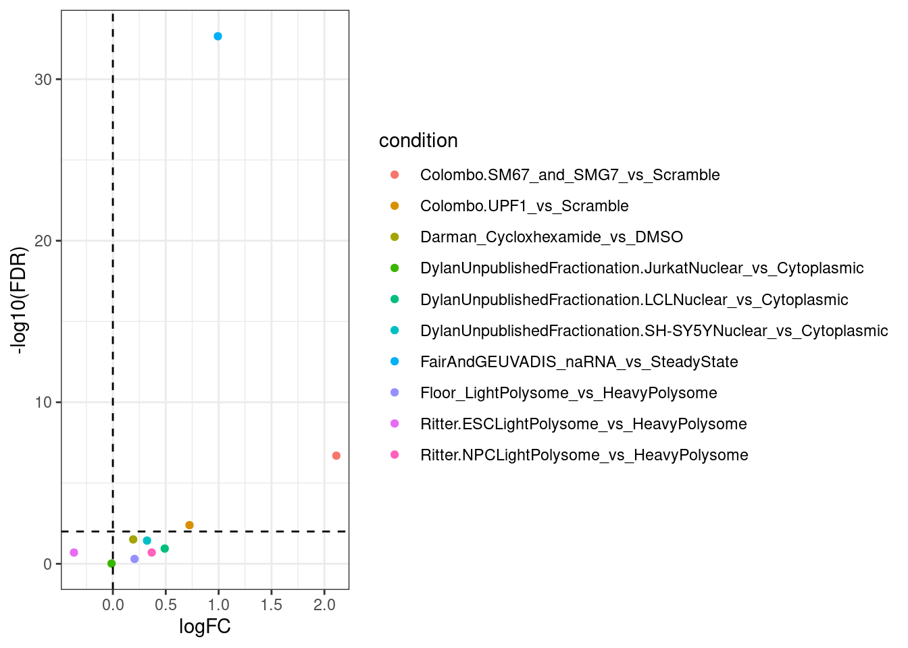
Ok from all of these, I think a trend might be emerging that gene expression might be a decent way to look at this problem… Let’s check that gene of interest…
MBD5
DE.results %>%
filter(Symbol == "MBD5") %>%
ggplot(aes(color=condition, x=logFC, y=-log10(FDR))) +
geom_point() +
geom_hline(yintercept=-log10(0.01), linetype="dashed") +
geom_vline(xintercept = 0, linetype="dashed") +
theme_bw()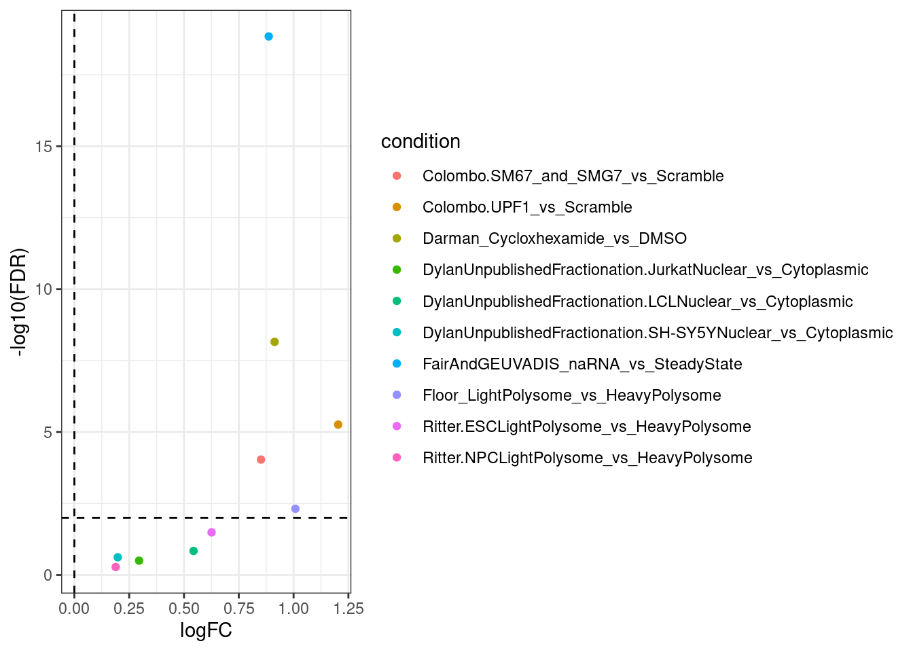
diff.splicing.results %>%
filter(Gene_name=="MBD5" & !Coding) %>%
filter(!Contrast == "FairAndGEUVADIS_naRNA_vs_SteadyState") %>%
ggplot(aes(color=Contrast, x=deltapsi, y=-log10(p))) +
geom_point() +
geom_hline(yintercept=-log10(0.01), linetype="dashed") +
geom_vline(xintercept = 0, linetype="dashed") +
theme_bw() +
facet_wrap(~intron) 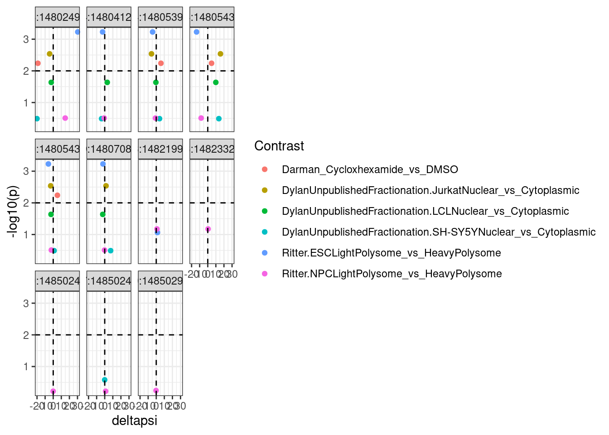
diff.splicing.results %>%
filter(Gene_name=="MBD5" & !Coding) %>%
filter(deltapsi > 0 & p < 0.01) Contrast
<char>
1: Darman_Cycloxhexamide_vs_DMSO
2: Darman_Cycloxhexamide_vs_DMSO
3: Darman_Cycloxhexamide_vs_DMSO
4: DylanUnpublishedFractionation.JurkatNuclear_vs_Cytoplasmic
5: DylanUnpublishedFractionation.JurkatNuclear_vs_Cytoplasmic
6: FairAndGEUVADIS_naRNA_vs_SteadyState
7: FairAndGEUVADIS_naRNA_vs_SteadyState
8: FairAndGEUVADIS_naRNA_vs_SteadyState
9: FairAndGEUVADIS_naRNA_vs_SteadyState
10: Ritter.ESCLightPolysome_vs_HeavyPolysome
intron chrom start end
<char> <char> <int> <int>
1: chr2:148021684:148053933:clu_50423_+ chr2 148021684 148053933
2: chr2:148021684:148054391:clu_50423_+ chr2 148021684 148054391
3: chr2:148054050:148054391:clu_50423_+ chr2 148054050 148054391
4: chr2:148021684:148054391:clu_50423_+ chr2 148021684 148054391
5: chr2:148054449:148070873:clu_50423_+ chr2 148054449 148070873
6: chr2:148021684:148053933:clu_50423_+ chr2 148021684 148053933
7: chr2:148021684:148054391:clu_50423_+ chr2 148021684 148054391
8: chr2:148054050:148054391:clu_50423_+ chr2 148054050 148054391
9: chr2:148502509:148502965:clu_50435_+ chr2 148502509 148502965
10: chr2:148021684:148024966:clu_50423_+ chr2 148021684 148024966
cluster logef Control NMD_enriched deltapsi status
<char> <num> <num> <num> <num> <char>
1: chr2:clu_50423_+ 7.5888538 1.973041e-06 0.058050784 5.80488110 Success
2: chr2:clu_50423_+ -1.6741507 2.623554e-02 0.073230181 4.69946437 Success
3: chr2:clu_50423_+ -1.0989327 1.310412e-02 0.065016289 5.19121646 Success
4: chr2:clu_50423_+ 2.4003564 6.665125e-02 0.223640485 15.69892349 Success
5: chr2:clu_50423_+ 2.1809966 9.325724e-03 0.025127998 1.58022743 Success
6: chr2:clu_50423_+ -0.3675929 6.807745e-02 0.095638672 2.75612220 Success
7: chr2:clu_50423_+ -0.2044755 2.390188e-01 0.395278516 15.62597631 Success
8: chr2:clu_50423_+ -0.2567600 8.041408e-02 0.126210781 4.57967025 Success
9: chr2:clu_50435_+ -0.1065373 3.565674e-03 0.004077064 0.05113897 Success
10: chr2:clu_50423_+ 1.0939205 4.045588e-01 0.708226005 30.36671739 Success
loglr df p p.adjust strand
<num> <int> <num> <num> <char>
1: 7.271054 4 5.751515e-03 1.470129e-02 +
2: 7.271054 4 5.751515e-03 1.470129e-02 +
3: 7.271054 4 5.751515e-03 1.470129e-02 +
4: 14.154932 11 2.901552e-03 1.115752e-02 +
5: 14.154932 11 2.901552e-03 1.115752e-02 +
6: 151.121836 20 2.813703e-52 2.721958e-51 +
7: 151.121836 20 2.813703e-52 2.721958e-51 +
8: 151.121836 20 2.813703e-52 2.721958e-51 +
9: 32.540022 5 1.078699e-12 2.722122e-12 +
10: 13.725970 8 5.905039e-04 4.686068e-03 +
name score splice_site acceptors_skipped
<char> <int> <char> <int>
1: chr2_148021684_148053932_+ 1099 GT-AG 0
2: chr2_148021684_148054390_+ 4197 GT-AG 0
3: chr2_148054050_148054390_+ 1433 GT-AG 0
4: chr2_148021684_148054390_+ 4197 GT-AG 0
5: chr2_148054449_148070872_+ 254 GT-AG 0
6: chr2_148021684_148053932_+ 1099 GT-AG 0
7: chr2_148021684_148054390_+ 4197 GT-AG 0
8: chr2_148054050_148054390_+ 1433 GT-AG 0
9: chr2_148502509_148502964_+ 38 GT-AG 0
10: chr2_148021684_148024965_+ 5080 GT-AG 0
exons_skipped donors_skipped anchor known_donor known_acceptor
<int> <int> <char> <int> <int>
1: 0 0 D 1 0
2: 0 0 D 1 0
3: 0 0 N 0 0
4: 0 0 D 1 0
5: 0 0 N 0 0
6: 0 0 D 1 0
7: 0 0 D 1 0
8: 0 0 N 0 0
9: 0 0 D 1 0
10: 0 0 D 1 0
known_junction gene_names gene_ids
<int> <char> <char>
1: 0 MBD5 ENSG00000204406.14
2: 0 MBD5 ENSG00000204406.14
3: 0
4: 0 MBD5 ENSG00000204406.14
5: 0
6: 0 MBD5 ENSG00000204406.14
7: 0 MBD5 ENSG00000204406.14
8: 0
9: 0 MBD5 ENSG00000204406.14
10: 0 MBD5 ENSG00000204406.14
transcripts 5ss_seq
<char> <char>
1: ENST00000407073.5,ENST00000638043.2,ENST00000642680.2 AAAGGTAAGTG
2: ENST00000407073.5,ENST00000638043.2,ENST00000642680.2 AAAGGTAAGTG
3: ACAGGTGGGCG
4: ENST00000407073.5,ENST00000638043.2,ENST00000642680.2 AAAGGTAAGTG
5: CACAGTAAGTT
6: ENST00000407073.5,ENST00000638043.2,ENST00000642680.2 AAAGGTAAGTG
7: ENST00000407073.5,ENST00000638043.2,ENST00000642680.2 AAAGGTAAGTG
8: ACAGGTGGGCG
9: ENST00000407073.5,ENST00000638043.2,ENST00000642680.2 GAAAGTAAGCA
10: ENST00000407073.5,ENST00000638043.2,ENST00000642680.2 AAAGGTAAGTG
3ss_seq 5ss_score 3ss_score Intron_coord Gene_name Annot
<char> <num> <num> <char> <char> <lgcl>
1: TCTATGACAG 13.040886 5.722426 chr2:148021684-148053933 MBD5 TRUE
2: TGCTTAACAG 13.040886 6.208464 chr2:148021684-148054391 MBD5 TRUE
3: TGCTTAACAG 8.322879 6.208464 chr2:148054050-148054391 MBD5 TRUE
4: TGCTTAACAG 13.040886 6.208464 chr2:148021684-148054391 MBD5 TRUE
5: TTTTTTTTAG 6.850367 10.348467 chr2:148054449-148070873 MBD5 TRUE
6: TCTATGACAG 13.040886 5.722426 chr2:148021684-148053933 MBD5 TRUE
7: TGCTTAACAG 13.040886 6.208464 chr2:148021684-148054391 MBD5 TRUE
8: TGCTTAACAG 8.322879 6.208464 chr2:148054050-148054391 MBD5 TRUE
9: GTTGCATCAG 7.955293 3.899733 chr2:148502509-148502965 MBD5 TRUE
10: CCTTACCCAG 13.040886 6.395020 chr2:148021684-148024966 MBD5 TRUE
Coding UTR IsSig
<lgcl> <lgcl> <lgcl>
1: FALSE TRUE FALSE
2: FALSE TRUE FALSE
3: FALSE FALSE FALSE
4: FALSE TRUE FALSE
5: FALSE FALSE FALSE
6: FALSE TRUE TRUE
7: FALSE TRUE TRUE
8: FALSE FALSE TRUE
9: FALSE FALSE FALSE
10: FALSE TRUE TRUEThis intron: chr2:148021684:148054391:clu_50423_+, seems most promising… but it is in the 5’ UTR region which I think is not good candidate for the specific case.
Also, note that later I think some of these polysome profiling could be useful to others in Hastings lab interested in splicing in 5UTR that may alter translation output.
5’ UTR splicing
Let’s filiter differential splicing results for introns that are in 5’UTR regions.
First get positions of 5’UTR for mane isoforms.
wget -O- "https://ftp.ncbi.nlm.nih.gov/refseq/MANE/MANE_human/current/MANE.GRCh38.v1.4.ensembl_genomic.gtf.gz" | zcat | bedparse gtf2bed --extraFields gene_id,gene_name /dev/stdin | awk -v OFS='\t' '{$4=$4"_"$13"_"$14; print $1,$2,$3,$4,$5,$6,$7,$8,$9,$10,$11,$12}' | bedparse 5pUTR | gzip - > ../data/5pUTR.bed.gzNow read in the 5’UTR positions
fiveUTR <- read_tsv("../data/5pUTR.bed.gz", col_names = c("chrom", "start", "end", "name", "score", "strand", "thickStart", "thickEnd", "color", "nBlocks", "blockSizes", "blockStarts"))
fiveUTR %>% head()# A tibble: 6 × 12
chrom start end name score strand thickStart thickEnd color nBlocks
<chr> <dbl> <dbl> <chr> <dbl> <chr> <dbl> <dbl> <dbl> <dbl>
1 chr1 3069202 3069259 ENST00… 0 + 3069202 3069202 0 1
2 chr1 2412502 2412564 ENST00… 0 - 2412502 2412502 0 1
3 chr1 10474949 10474966 ENST00… 0 + 10474949 10474949 0 1
4 chr1 2476288 2476588 ENST00… 0 + 2476288 2476288 0 1
5 chr1 9292893 9355891 ENST00… 0 + 9292893 9292893 0 2
6 chr1 9069536 9069635 ENST00… 0 - 9069536 9069536 0 1
# ℹ 2 more variables: blockSizes <dbl>, blockStarts <chr>and intserct with the differential splicing results
diff.splicing.In.5UTR <- diff.splicing.results %>%
valr::bed_intersect(.,
fiveUTR,
suffix=c("", ".utr")
) %>%
mutate(FullyWithin = start >= start.utr & end <= end.utr)And now count number significant differential
diff.splicing.In.5UTR %>%
filter(IsSig) %>%
group_by(Contrast, cluster) %>%
mutate(ContainsFullyWithin = any(FullyWithin)) %>%
ungroup() %>%
distinct(Contrast, cluster, .keep_all=T) %>%
count(Contrast, ContainsFullyWithin) %>%
arrange(Contrast) %>%
ggplot(aes(y=Contrast, x=n, fill=ContainsFullyWithin)) +
geom_col(position='stack') +
# geom_text(aes(label=n), hjust=-0.1) +
scale_y_discrete(limits = rev) +
scale_x_continuous(expand = expansion(mult = c(0, 0.1))) +
theme_bw() +
labs(x="Number of leafcutter significant clusters", y="Contrast", caption=str_glue("FDR<1% & |dPSI|>{dPSI_threshold}%"))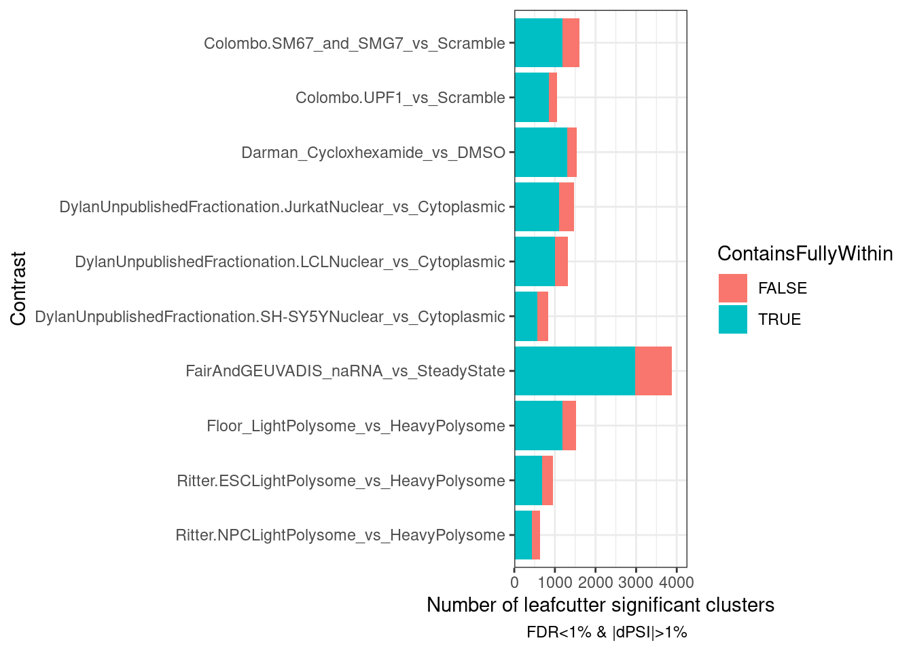
I recall they are most interested in the 5UTR junctions that might be blocked by oligo to up-regulate expression. That is, the splice event that is down-regulated in the NMD enriched (or heavy polysome, highly translated) conditions, such that blocking the splice event would up-regulate the expression of the gene.
diff.splicing.In.5UTR %>%
filter(IsSig) %>%
filter(deltapsi < -10 & FullyWithin) %>%
distinct(Contrast, Gene_name, .keep_all=T) %>%
count(Contrast) %>%
arrange(Contrast) %>%
ggplot(aes(y=Contrast, x=n)) +
geom_col(position='stack') +
# geom_text(aes(label=n), hjust=-0.1) +
scale_y_discrete(limits = rev) +
scale_x_continuous(expand = expansion(mult = c(0, 0.1))) +
theme_bw() +
labs(x="Number of differentially spliced genes", y="Contrast", caption=str_glue("FDR<1% & |dPSI|>{dPSI_threshold}% & deltaPSI < -0.20 & FullyWithin"))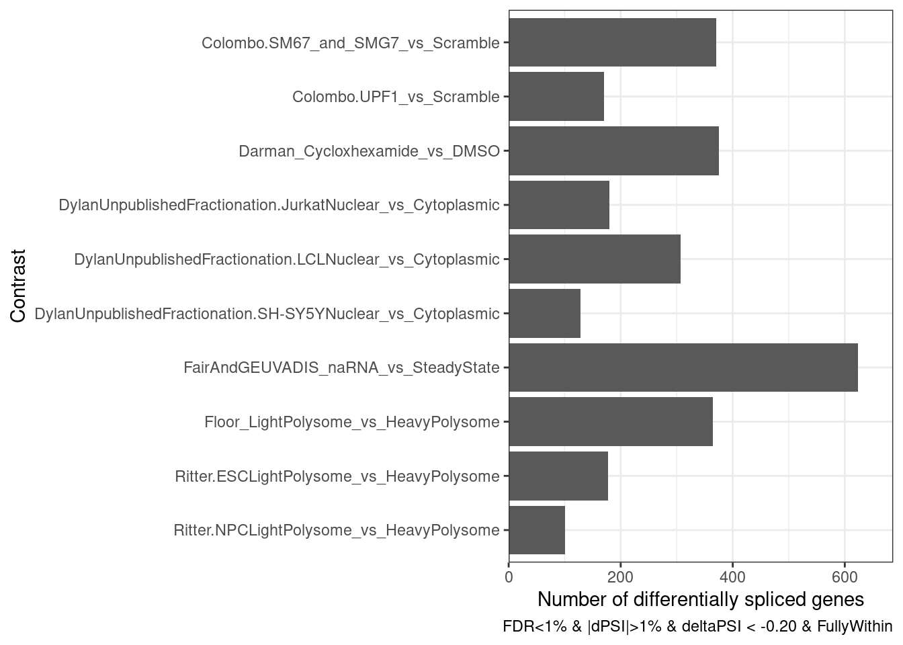
One could probably do more here… Like look for overlap between some of the datasets, and which are disease relevant genes
library(ggVennDiagram)
venn_data <- diff.splicing.In.5UTR %>%
filter(str_detect(Contrast, "Polysome")) %>%
filter(IsSig) %>%
filter(deltapsi < -10 & FullyWithin) %>%
distinct(Contrast, gene_names) %>%
group_by(Contrast) %>%
summarise(genes = list(unique(gene_names))) %>%
deframe()
ggVennDiagram(venn_data) +
scale_fill_gradient(low = "white", high = "dodgerblue")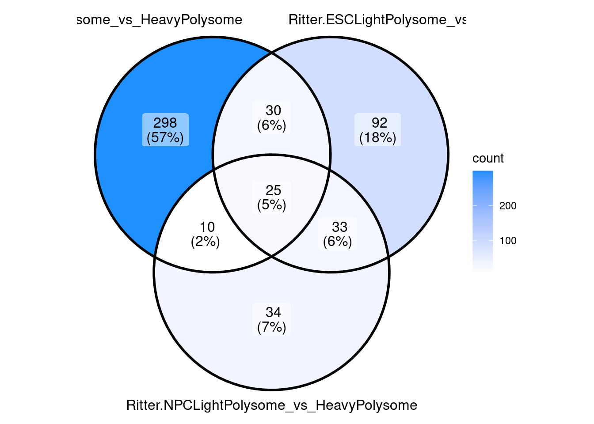
And write out bed file for browsing…
diff.splicing.In.5UTR %>%
filter(str_detect(Contrast, "Polysome")) %>%
group_by(Contrast, cluster) %>%
filter(any(IsSig & FullyWithin & deltapsi < -10)) %>%
mutate(color = scales::col_numeric(
palette = scales::div_gradient_pal(low = "#4575b4", mid = "#ffffbf", high = "#d73027"),
domain = c(-50, 50)
)(pmax(pmin(deltapsi, 50), -50))) %>%
mutate(thickStart = start, thickEnd = end) %>%
dplyr::select(chrom, start, end, cluster, deltapsi, strand, thickStart, thickEnd, color) %>%
group_by(Contrast) %>%
dplyr::select(-Contrast) %>%
group_walk(~write_tsv(.x, paste0("../code/scratch/Polysome_5UTR_splicing_", .y$Contrast[1], ".bed"), col_names = FALSE))
# python code/module_workflows/rna_seq/scripts/leafcutter2/scripts/Reformat_gtf.py -i /project2/yangili1/bjf79/ReferenceGenomes/GRCh38_GencodeRelease44Comprehensive/Reference.gtf -o /dev/null -fa /project2/yangili1/bjf79/ReferenceGenomes/GRCh38_GencodeRelease44Comprehensive/Reference.fa -bed12_out code/scratch/Reference.FirstORF_AtLeast42aa.bed -infer_transcript_type_approach C -translation_approach E -infer_gene_type_approach BFrom browsing, these bed files, here is an example in the COMMD5 gene. Across all three polysome profiling contrast, red junction isoform is less translated (less associated with heavy polysomes) compared to the blue junction. Note that the red junction isoform includes an upstream ORF, as noted by the red tick i highlighted above the gene structure, and the my custom re-formatting of the annotated transcript structures to denote the first ORF with thick bars.
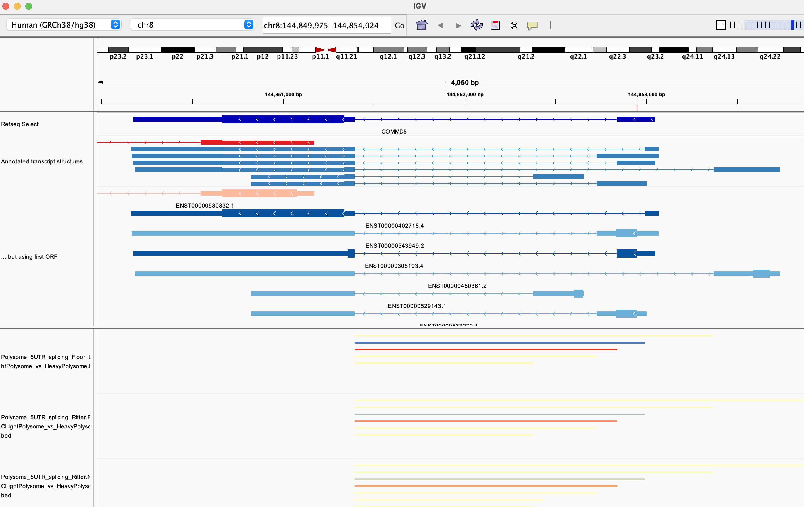